Institutional Ecology, 'Translations' and Boundary Objects: Amateurs and Professionals in Berkeley's Museum of Vertebrate Zoology, 1907-39 Author(s): Susan Leigh Star and James R. Griesemer Reviewed work(s):
机构生态学、“转译”与边界物：1907—1939年间伯克利脊椎动物学博物馆中的业余爱好者与专业人士 作者：Susan Leigh Star 与 James R. Griesemer 评审著作：
Original Layout · 原始版面 35 pages · 展开查看图、表和公式
以下为 PDF 原始页面渲染图，用于核对图、表、公式和复杂版面；正文翻译在下方继续。
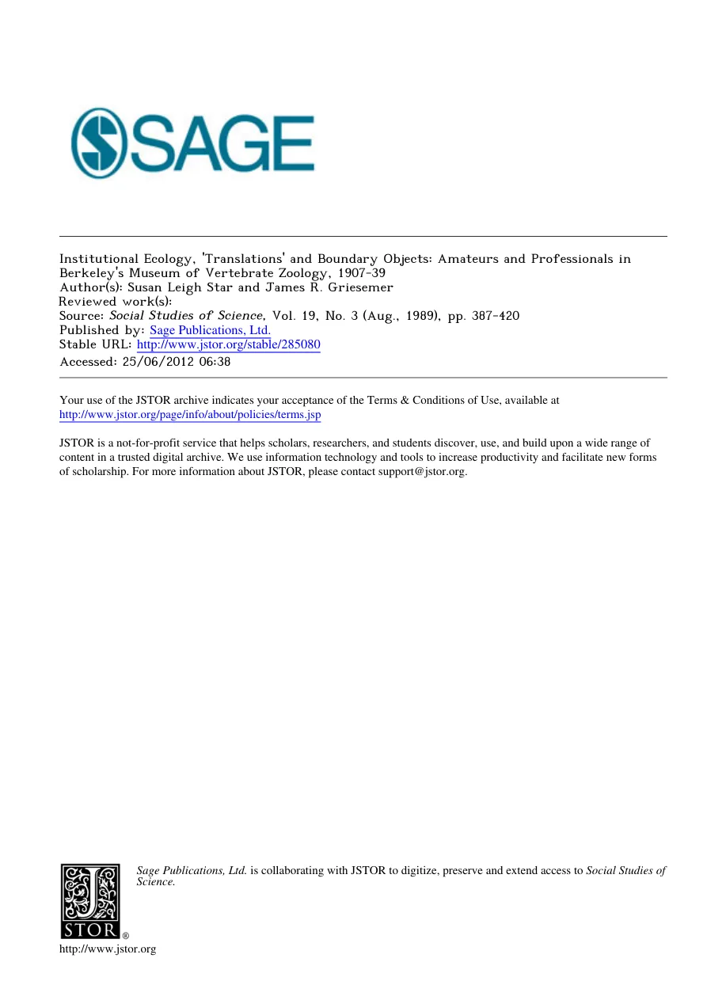
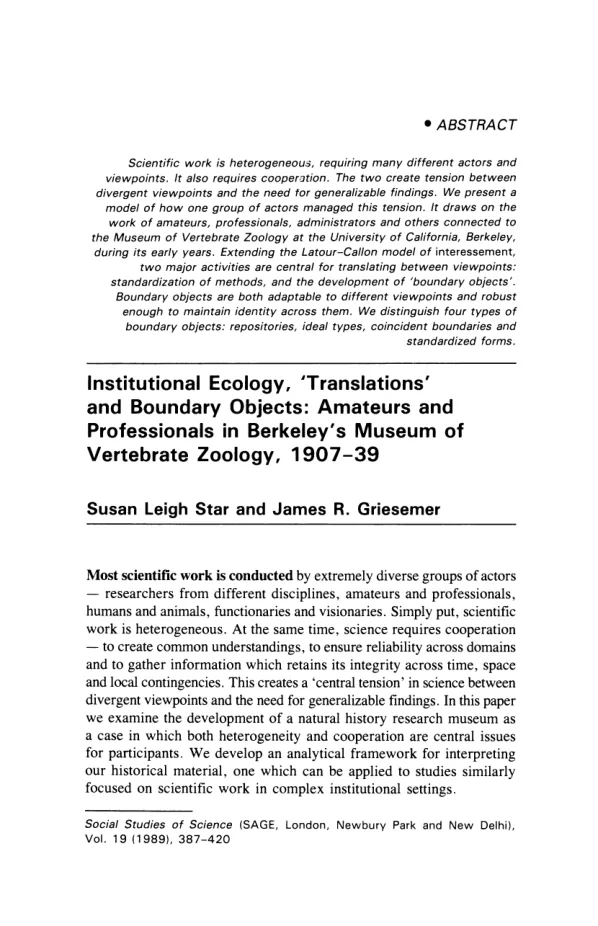

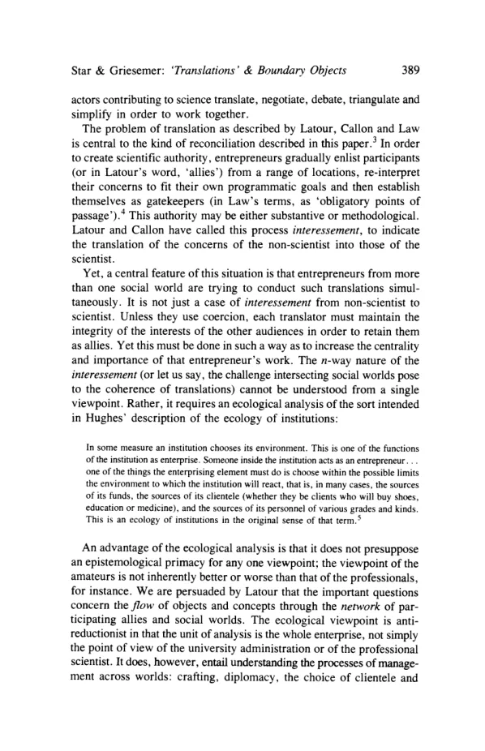
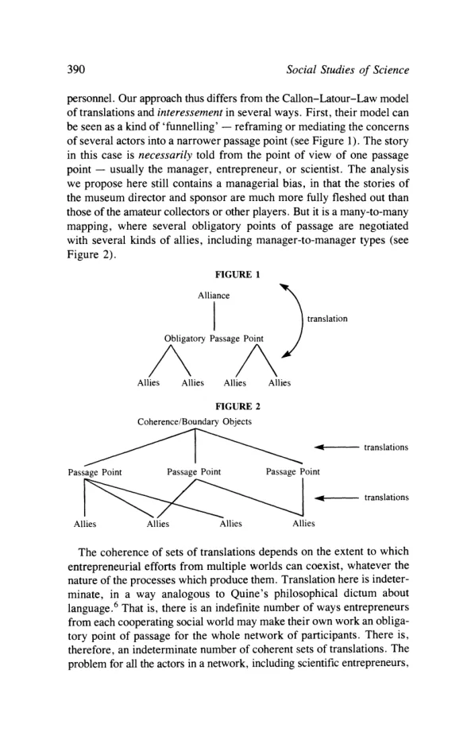


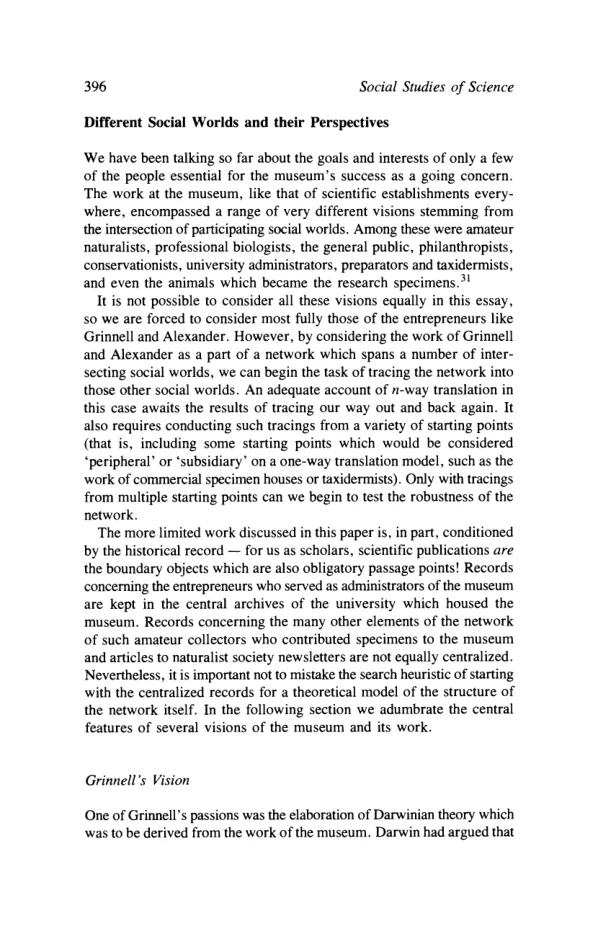


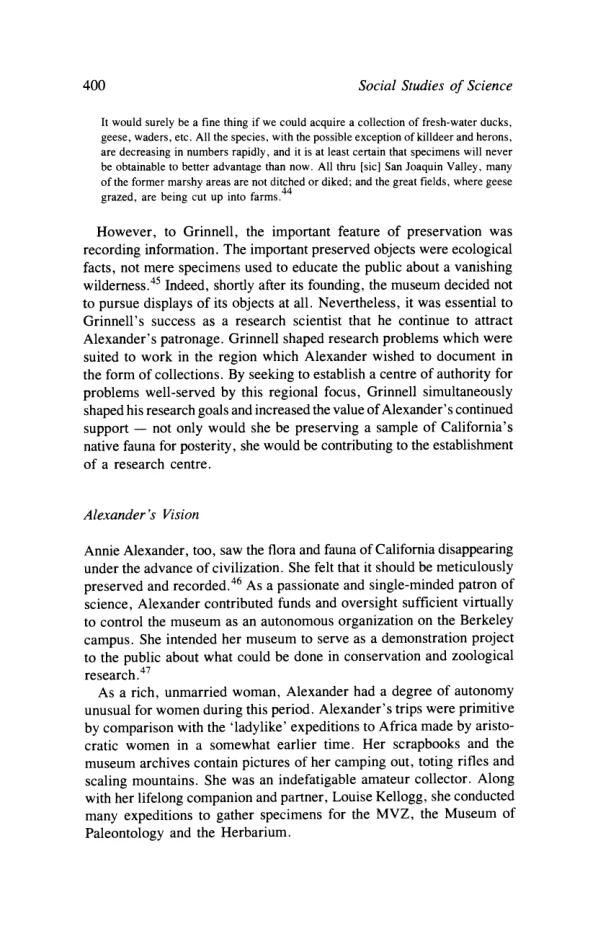

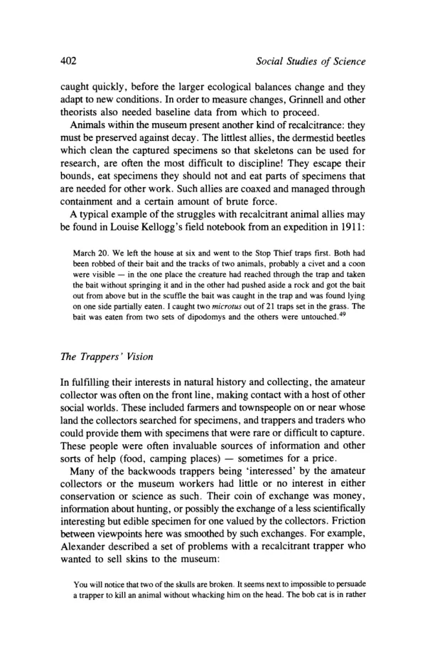
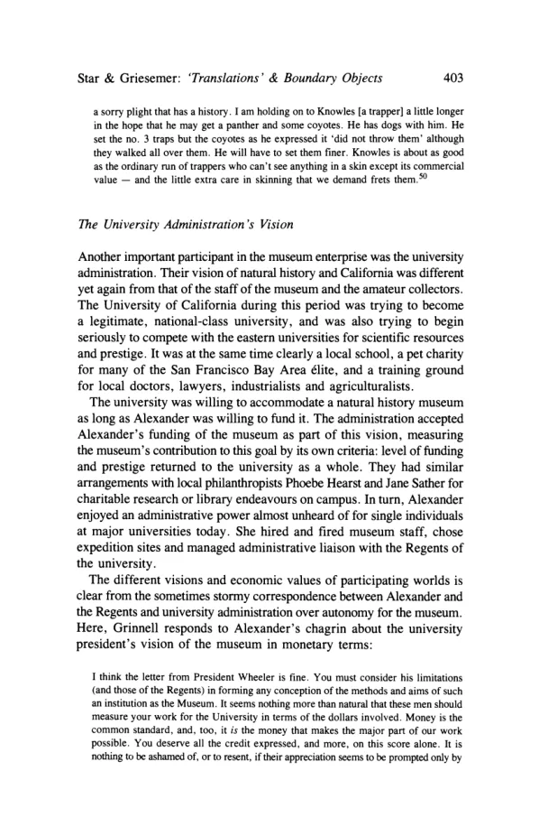


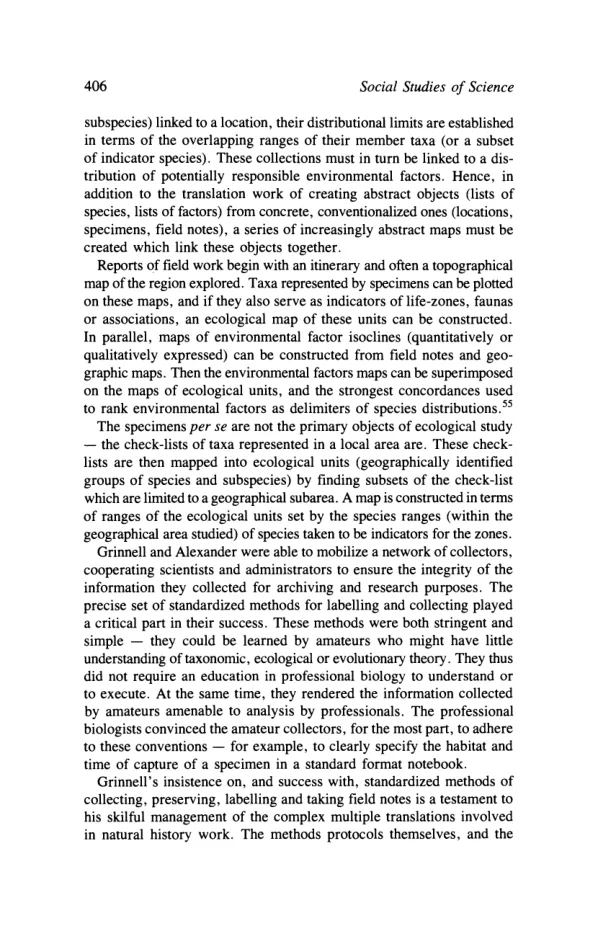

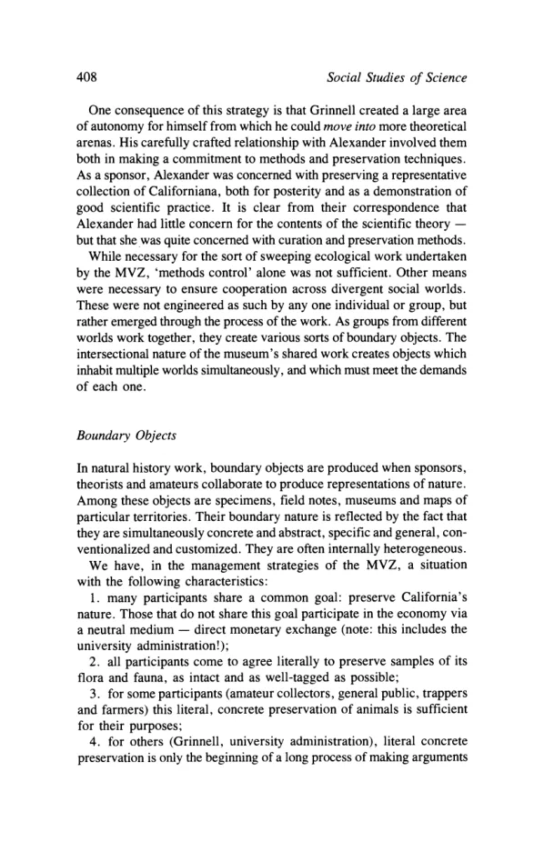
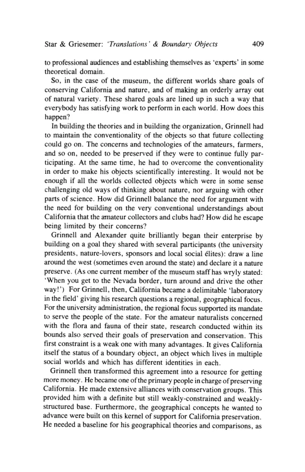


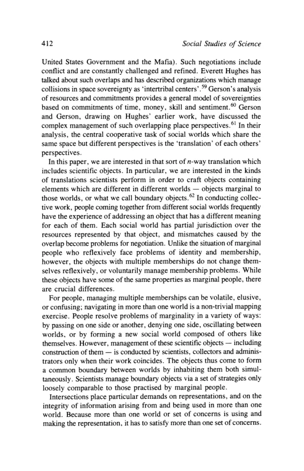


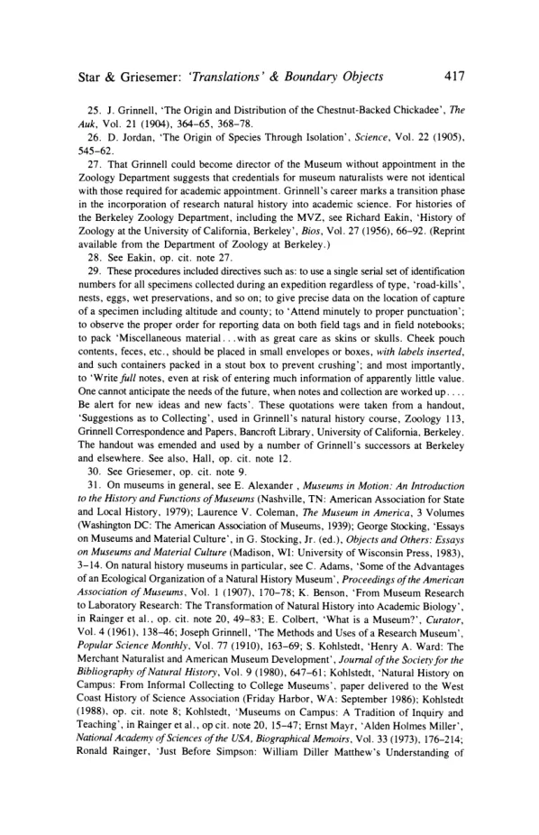

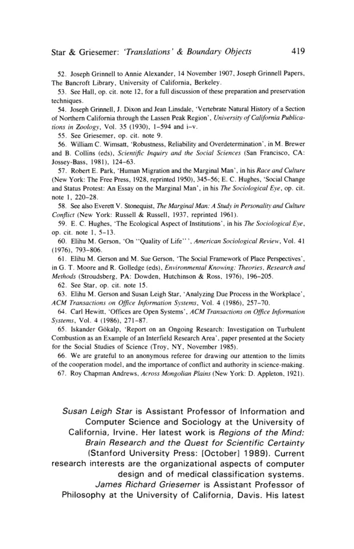

Institutional Ecology, 'Translations' and Boundary Objects: Amateurs and Professionals in Berkeley's Museum of Vertebrate Zoology, 1907-39 Author(s): Susan Leigh Star and James R. Griesemer Reviewed work(s):
Source: Social Studies of Science, Vol. 19, No. 3 (Aug., 1989), pp. 387-420 Published by: Sage Publications, Ltd. Stable URL: http://www.jstor.org/stable/285080 . Accessed: 25/06/2012 06:38
Your use of the JSTOR archive indicates your acceptance of the Terms & Conditions of Use, available at . http://www.jstor.org/page/info/about/policies/terms.jsp
JSTOR is a not-for-profit service that helps scholars, researchers, and students discover, use, and build upon a wide range of content in a trusted digital archive. We use information technology and tools to increase productivity and facilitate new forms of scholarship. For more information about JSTOR, please contact support@jstor.org.
Sage Publications, Ltd. is collaborating with JSTOR to digitize, preserve and extend access to Social Studies of Science.
Scientific work is heterogeneous, requiring many different actors and viewpoints. It also requires cooperation. The two create tension between divergent viewpoints and the need for generalizable findings. We present a model of how one group of actors managed this tension. It draws on the work of amateurs, professionals, administrators and others connected to the Museum of Vertebrate Zoology at the University of California, Berkeley, during its early years. Extending the Latour-Callon model of interessement, two major activities are central for translating between viewpoints: standardization of methods, and the development of 'boundary objects'. Boundary objects are both adaptable to different viewpoints and robust enough to maintain identity across them. We distinguish four types of boundary objects: repositories, ideal types, coincident boundaries and standardized forms.
Institutional Ecology, 'Translations' and Boundary Objects: Amateurs and Professionals in Berkeley's Museum of Vertebrate Zoology, 1907-39
Susan Leigh Star and James R. Griesemer
Most scientific work is conducted by extremely diverse groups of actors - researchers from different disciplines, amateurs and professionals, humans and animals, functionaries and visionaries. Simply put, scientific work is heterogeneous. At the same time, science requires cooperation - to create common understandings, to ensure reliability across domains and to gather information which retains its integrity across time, space and local contingencies. This creates a 'central tension' in science between divergent viewpoints and the need for generalizable findings. In this paper we examine the development of a natural history research museum as a case in which both heterogeneity and cooperation are central issues for participants. We develop an analytical framework for interpreting our historical material, one which can be applied to studies similarly focused on scientific work in complex institutional settings.
Social Studies of Science (SAGE, London, Newbury Park and New Delhi), Vol. 19 (1989), 387-420
Social Studies of Science
The plan of the paper is as follows. First we consider the ramifications of the heterogeneity of scientific work and the need for cooperation among participants for the nature of translation among social worlds. We suggest modifications of the interessement model of Latour, Callon and Law. We urge a more ecological approach and develop the concept of boundary objects to analyze a case study of a research natural history museum. We discuss the history of the Museum of Vertebrate Zoology at the University of California, Berkeley, and describe conceptions of it by participants from several distinct social worlds, including those of professional scientists, amateur naturalists, patrons, hired hands and administrators. Our discussion is meant to be suggestive rather than conclusive at this stage, outlining an approach to case studies as well as providing a partial analysis of the case at hand. We conclude with further discussion of boundary objects and the allied issue of methods standardization.
The Problem of Common Representation in Diverse Intersecting Social Worlds
Common myths characterize scientific cooperation as deriving from a consensus imposed by nature. But if we examine the actual work organization of scientific enterprises, we find no such consensus. Instead, we find that scientific work neither loses its internal diversity nor is consequently retarded by lack of consensus. Consensus is not necessary for cooperation nor for the successful conduct of work. This fundamental sociological finding holds in science no less than in any other kind of work.1 However, scientific actors themselves face many problems in trying to ensure integrity of information in the presence of such diversity. One way of describing this process is to say that the actors trying to solve scientific problems come from different social worlds and establish a mutual modus operandi.2 A university administrator in charge of grants and contracts, for example, answers to a different set of audiences and pursues a different set of tasks, than does an amateur field naturalist collecting specimens for a natural history museum. When the worlds of these actors intersect a difficulty appears. The creation of new scientific knowledge depends on communication as well as on creating new findings. But because these new objects and methods mean different things in different worlds, actors are faced with the task of reconciling these meanings if they wish to cooperate. This reconciliation requires substantial labour on everyone's part. Scientists and other
Star & Griesemer: 'Translations' & Boundary Objects
actors contributing to science translate, negotiate, debate, triangulate and simplify in order to work together. The problem of translation as described by Latour, Callon and Law is central to the kind of reconciliation described in this paper.3 In order to create scientific authority, entrepreneurs gradually enlist participants (or in Latour's word, 'allies') from a range of locations, re-interpret their concerns to fit their own programmatic goals and then establish themselves as gatekeepers (in Law's terms, as 'obligatory points of passage').4 This authority may be either substantive or methodological. Latour and Callon have called this process interessement, to indicate the translation of the concerns of the non-scientist into those of the scientist. Yet, a central feature of this situation is that entrepreneurs from more than one social world are trying to conduct such translations simultaneously. It is not just a case of interessement from non-scientist to scientist. Unless they use coercion, each translator must maintain the integrity of the interests of the other audiences in order to retain them as allies. Yet this must be done in such a way as to increase the centrality and importance of that entrepreneur's work. The n-way nature of the interessement (or let us say, the challenge intersecting social worlds pose to the coherence of translations) cannot be understood from a single viewpoint. Rather, it requires an ecological analysis of the sort intended in Hughes' description of the ecology of institutions:
In some measure an institution chooses its environment. This is one of the functions of the institution as enterprise. Someone inside the institution acts as an entrepreneur... one of the things the enterprising element must do is choose within the possible limits the environment to which the institution will react, that is, in many cases, the sources of its funds, the sources of its clientele (whether they be clients who will buy shoes, education or medicine), and the sources of its personnel of various grades and kinds. This is an ecology of institutions in the original sense of that term.5
An advantage of the ecological analysis is that it does not presuppose an epistemological primacy for any one viewpoint; the viewpoint of the amateurs is not inherently better or worse than that of the professionals, for instance. We are persuaded by Latour that the important questions concern the flow of objects and concepts through the network of participating allies and social worlds. The ecological viewpoint is antireductionist in that the unit of analysis is the whole enterprise, not simply the point of view of the university administration or of the professional scientist. It does, however, entail understanding the processes of management across worlds: crafting, diplomacy, the choice of clientele and
Social Studies of Science
personnel. Our approach thus differs from the Callon-Latour-Law model of translations and interessement in several ways. First, their model can be seen as a kind of 'funnelling' - reframing or mediating the concerns of several actors into a narrower passage point (see Figure 1). The story in this case is necessarily told from the point of view of one passage point - usually the manager, entrepreneur, or scientist. The analysis we propose here still contains a managerial bias, in that the stories of the museum director and sponsor are much more fully fleshed out than those of the amateur collectors or other players. But it is a many-to-many mapping, where several obligatory points of passage are negotiated with several kinds of allies, including manager-to-manager types (see Figure 2).
Obligatory Passage Point A /\A Allies Allies Allies Allies Coherence/Boundary Objects ^^^^ \ ^^-^ " translations Passage Point Passage Point Passage Point ^s.^^^y ^^^^^^ ^ -translations Allies Allies Allies Allies The coherence of sets of translations depends on the extent to which
entrepreneurial efforts from multiple worlds can coexist, whatever the nature of the processes which produce them. Translation here is indeterminate, in a way analogous to Quine's philosophical dictum about language.6 That is, there is an indefinite number of ways entrepreneurs from each cooperating social world may make their own work an obligatory point of passage for the whole network of participants. There is, therefore, an indeterminate number of coherent sets of translations. The problem for all the actors in a network, including scientific entrepreneurs,
Star & Griesemer: 'Translations' & Boundary Objects
is to (temporarily) reduce their local uncertainty without risking a loss of cooperation from allies. Once the process has established an obligatory point of passage, the job then becomes to defend it against other translations threatening to displace it. Our interest in problems of coherence and cooperation in science has been shaped, in part, by trying to understand the historical development of a particular type of institution: natural history research museums. Museums of natural history originally arose when private collectors in the 17th century opened their cabinets of curiosities to public view. The display of wealth, polite learning and emulation of the aristocracy, as well as development of reference collections for physicians and apothecaries, were common motives for making cabinets. Many such cabinets were arranged to display, and evoke wonder at, the variety and plenitude of nature or to represent the universe in microcosm. Such museums, in other words, developed as part of popular culture.7 In the nineteenth century, many new museums were developed by amateur naturalists, rather than by members of the 'general public', through their participation in societies for the amateur naturalist. These societies filled an important role in the development of the museum-based science to come.8 The museum we studied, the Museum of Vertebrate Zoology (MVZ) at the University of California, Berkeley, is important as an example of a museum devoted to scientific research from its inception, aided by the alliance of an amateur naturalist/patron and an early West Coast professional scientist. The MVZ did not take on scientific research as an adjunct to public instruction or popular edification as had many eastern museums; if anything, the reverse is true. (A symbol of this tradition of research is the evident pride with which current museum staff draw attention to an advertisement on the front door stating that there are 'NO PUBLIC EXHIBITS'.) As such, the development of the research natural history museum represents an important stage in the professionalization of natural history work, as well as an example of the changing relationship between amateurs and professionals after the professionalization of biology in America had already begun. Unlike many well documented cases of eastern institutions which looked to the European scientific community as a model and for legitimation, western biologists had to struggle to gain credibility in the eyes of the already professionalizing biological community in the eastern US itself. Successful pursuit of the research problems through which the Museum of Vertebrate Zoology's scientists hoped to gain recognition depended on an evolving set of practices instituted to manage the particular sort of work occasioned by the intersection of the professional, amateur,
Social Studies of Science
lay and academic worlds.9 There, several groups of actors - amateurs, professionals, animals, bureaucrats and 'mercenaries' - succeeded in crafting a coherent problem-solving enterprise, surviving multiple translations. Joseph Grinnell was the first director of the Museum of Vertebrate Zoology. He worked on problems of speciation, migration and the role of the environment in Darwinian evolution. Grinnell's research required the labours of (among others) university administrators, professors, research scientists, curators, amateur collectors, private sponsors and patrons, occasional field hands, government officials and members of scientific clubs. Some objects of interest to all these social worlds included: * species and subspecies of mammals and birds * the terrain of the state of California * physical factors in California's environment (such as temperature, rainfall and humidity) * the habitats of collected animal species
机构生态学、“转译”与边界物：1907—1939年间伯克利脊椎动物学博物馆中的业余爱好者与专业人士 作者：Susan Leigh Star 与 James R. Griesemer 评审著作：
Source: Social Studies of Science, Vol. 19, No. 3 (Aug., 1989), pp. 387-420 Published by: Sage Publications, Ltd. Stable URL: http://www.jstor.org/stable/285080 . Accessed: 25/06/2012 06:38
Your use of the JSTOR archive indicates your acceptance of the Terms & Conditions of Use, available at . http://www.jstor.org/page/info/about/policies/terms.jsp
JSTOR is a not-for-profit service that helps scholars, researchers, and students discover, use, and build upon a wide range of content in a trusted digital archive. We use information technology and tools to increase productivity and facilitate new forms of scholarship. For more information about JSTOR, please contact support@jstor.org.
Sage Publications, Ltd. 正与 JSTOR 合作，致力于将《Social Studies of Science》进行数字化、保存并扩大其获取范围。
科学工作具有异质性，需要众多不同的行动者和观点参与，同时也需要协作。这两个特性之间产生了张力：一方面存在观点分歧，另一方面又需要形成可推广的研究发现。本文提出了一个模型，说明一群行动者是如何处理这种张力的。该模型取材于与加州大学伯克利分校脊椎动物学博物馆早期发展相关的业余人士、专业人士、管理者及其他相关人员的工作。本文拓展了拉图尔-卡龙（Latour-Callon）的"利益纳入"（interessement）模型，指出在不同观点之间进行转译时，有两项核心活动至关重要：方法的标准化，以及"边界物"（boundary objects）的开发。边界物既能适应不同的观点，又足够稳健，能够在不同观点之间保持自身的同一性。我们区分了四种类型的边界物：知识库（repositories）、理想型（ideal types）、重合边界（coincident boundaries）和标准化表格（standardized forms）。
机构生态学、"转译"与边界物：1907-39年间伯克利脊椎动物学博物馆中的业余爱好者与专业人士
苏珊·莱斯·斯塔尔（Susan Leigh Star）与詹姆斯·R·格里塞默（James R. Griesemer）
大多数科学工作是由极为多样化的行动者群体开展的——来自不同学科的研究者、业余爱好者与专业人士、人类与动物、职能人员与远见者。简而言之,科学工作具有异质性。与此同时,科学又需要合作——以形成共同的理解，确保跨领域的可靠性，并收集在时间、空间和局部偶然性变化中仍能保持其完整性的信息。这就在科学中造成了一种"核心张力"，即分歧的观点与对可普遍化研究结果的需求之间的张力。在本文中，我们考察了一座自然史研究博物馆的发展历程，将其作为一个案例，说明异质性与合作对于参与者而言都是核心议题。我们建立了一个用于解读历史材料的分析框架，该框架也可应用于同样聚焦于复杂制度环境中科学工作的其他研究。
《科学社会研究》(SAGE，伦敦、纽伯里帕克和新德里出版)，第19卷 (1989)，387-420页
社会科学研究(Social Studies of Science)
本文的结构安排如下。首先,我们考察科学工作的异质性以及参与者之间合作的需要,对不同社会世界之间的转译(translation)之本质所产生的影响。我们提出对拉图尔(Latour)、卡龙(Callon)与劳(Law)所提出的"利益诱引"(interessement)模型的修正意见。我们主张采取一种更具生态学取向的方法,并发展出"边界物"(boundary objects)这一概念,以分析一个自然历史研究博物馆的案例研究。我们将讨论加州大学伯克利分校脊椎动物学博物馆(Museum of Vertebrate Zoology)的历史,并描述来自若干不同社会世界的参与者——包括职业科学家、业余博物学者、赞助人、雇佣人员以及行政管理人员——对该博物馆的不同理解。我们的讨论在此阶段旨在具有启发性,而非定论性,既勾勒出一种研究案例的方法路径,也对手头案例提供了部分分析。最后,我们将进一步讨论边界物问题及与之相关的方法标准化问题,以作结语。
多元交叉社会世界中共同表征的难题
科学合作常被神话般地描述为源自自然界所强加的一种共识。但若考察科学事业的实际工作组织,我们会发现并不存在这种共识。相反,我们发现科学工作既不会因此丧失其内部多样性,也不会因缺乏共识而受阻。共识既非合作之必要条件,也非工作顺利开展之必要条件。这一基本的社会学发现在科学领域和其他任何工作领域中同样成立。1 然而,科学行动者本身在试图确保信息完整性时,却面临诸多因这种多样性而产生的问题。描述这一过程的一种方式是,试图解决科学问题的行动者们来自不同的社会世界,并建立起一种相互的运作方式(modus operandi)。2 例如,负责基金和合同的大学行政人员所面对的受众群体和承担的任务,与为自然历史博物馆采集标本的业余野外博物学家截然不同。当这些行动者所处的世界发生交集时,便会出现困难。新科学知识的创造既依赖于交流,也依赖于新发现的产生。但由于这些新对象和方法在不同世界中意味着不同的东西,行动者若想合作,就必须面对协调这些意义的任务。这种协调需要各方付出大量的劳动。科学家及其他
星与格里斯默:"翻译"与边界物
为科学作出贡献的行动者进行翻译、协商、辩论、三角互证和简化，以便共同合作。正如拉图尔(Latour)、卡龙(Callon)和劳(Law)所描述的翻译问题，是本文所述之调和的核心所在。3 为了建立科学权威，创业者逐渐从多个地方招募参与者（或用拉图尔的话说，"盟友"），将这些参与者所关心的问题重新诠释以契合自身的纲领性目标，然后将自己确立为把关人（用劳的术语来说，即"必经之点"）。4 这种权威既可以是实质性的，也可以是方法论层面的。拉图尔和卡龙将这一过程称为"利益赋予"（interessement），意指将非科学家所关心的问题翻译为科学家所关心的问题。然而，这一情形的一个核心特征在于，来自不止一个社会世界的创业者正试图同时进行这类翻译。这不仅仅是一个从非科学家到科学家的"利益赋予"的案例。除非诉诸强制，否则每位翻译者都必须维护其他受众的利益的完整性，才能将其保留为盟友。然而，这样做的同时又必须提升该创业者自身工作的中心地位与重要性。这种多方向的"利益赋予"（或者说，交叉重叠的社会世界对翻译一致性所构成的挑战）无法从单一视角加以理解。相反，它需要一种生态学式的分析，正如休斯(Hughes)在描述制度生态学时所提出的那样：
在某种程度上,机构会选择自己所处的环境。这是机构作为一种事业体所具有的功能之一。机构内部会有人扮演企业家的角色……进取型人物必须做的事情之一,便是在可能的限度内,选择机构将要因应的环境,也就是说,在许多情况下,选择其资金来源、其客户来源(无论他们是购买鞋子、教育还是医疗服务的客户),以及各个层级和种类的人员来源。这正是"生态学"这一术语在其原初意义上所指的机构生态学。5
生态学分析的一个优势在于,它不预设任何单一观点在认识论上的优先性;例如,业余爱好者的观点并不天然优于或劣于专业人士的观点。我们赞同拉图尔(Latour)的观点,即重要的问题在于对象与概念在参与联盟和社会世界所构成的网络中的流动。生态学观点是反还原论的,因为其分析单元是整个事业本身,而非仅仅是大学管理层或专业科学家的观点。然而,这确实需要理解跨越各世界的管理过程:即精心构建、外交斡旋、客户对象的选择,以及
社会科学研究(Social Studies of Science)
人员。因此，我们的方法在几个方面不同于Callon-Latour-Law的转译和征召模型。首先，他们的模型可以被视为一种"漏斗式"过程——将多个行动者的关切重新构建或中介到一个更窄的通道点（见图1）。这种情况下的故事必然是从一个通道点的视角来讲述的——通常是经理、企业家或科学家。我们在此提出的分析仍然带有管理者的偏向，因为博物馆馆长和赞助者的故事比业余收藏家或其他参与者的故事得到了更充分的展开。但这是一种多对多的映射，其中多个必经通道点是与多种盟友协商而成的，包括经理对经理这类关系（见图2）。
Obligatory Passage Point A /\A Allies Allies Allies Allies Coherence/Boundary Objects ^^^^ \ ^^-^ " translations Passage Point Passage Point Passage Point ^s.^^^y ^^^^^^ ^ -translations Allies Allies Allies Allies The coherence of sets of translations depends on the extent to which
创业者的努力可以在多个世界之间共存，无论产生这些努力的过程性质如何。此处的转译具有不确定性，这与蒯因（Quine）关于语言的哲学论断颇为类似。也就是说，来自各个合作社会世界的创业者，将其自身工作转化为整个参与者网络的必经节点（obligatory point of passage）的方式，存在着无数种可能。因此，连贯一致的转译集合也存在着不确定的数目。对于网络中所有行动者（包括科学创业者在内）而言，问题在于
星与格里斯默：《"翻译"与边界对象》
该主体需要（暂时）降低其局部不确定性，而不冒失去盟友合作的风险。一旦这一过程建立起某个必经关口，接下来的任务便是抵御其他可能取而代之的转译。我们对科学中一致性与合作性问题的兴趣，部分源于试图理解一种特定类型机构——自然历史研究博物馆——的历史发展。自然历史博物馆最初起源于17世纪，私人收藏家将其珍奇柜（cabinets of curiosities）向公众开放展示。展示财富、彰显博雅学识、效仿贵族做派，以及为医生和药剂师建立参考藏品，都是建立这些珍奇柜的常见动机。许多此类珍奇柜的陈列旨在展现并唤起人们对自然多样性与丰富性的惊叹，或以微观世界的形式呈现宇宙全貌。换言之，此类博物馆是作为大众文化的一部分而发展起来的。7 到了19世纪，许多新博物馆是由业余博物学家（而非"普通公众"成员）通过参与业余博物学会而建立起来的。这些学会在后续以博物馆为基础的科学发展中发挥了重要作用。8 我们所研究的博物馆——加州大学伯克利分校脊椎动物博物馆（Museum of Vertebrate Zoology, MVZ）——作为一个自创立之初便致力于科学研究的博物馆范例，具有重要意义，其建立得益于一位业余博物学家/赞助人与一位早期西海岸专业科学家之间的联盟。MVZ并非像许多东部博物馆那样，将科学研究作为公共教育或大众启蒙的附属品；情况恰恰相反。（这一研究传统的一个象征便是，如今博物馆工作人员颇为自豪地指出正门上"无公众展览（NO PUBLIC EXHIBITS）"的告示牌。）由此，这一研究型自然历史博物馆的发展代表了自然历史工作专业化进程中的重要阶段，也是美国生物学专业化进程启动之后，业余人士与专业人士之间关系演变的一个范例。与许多有着充分记录的东部机构案例不同——那些机构以欧洲科学界为楷模，并从中寻求合法性——西部生物学家们必须努力在美国东部本已日趋专业化的生物学界眼中赢得信誉。脊椎动物博物馆的科学家们希望借以获得认可的研究课题能否成功推进，取决于一整套不断演变的实践方式，这些实践是为应对由专业、业余以及……的交汇所产生的特定类型工作而建立起来的。
社会科学研究(Social Studies of Science)
业余与学术两个世界。9 在那里，多个行动者群体——业余爱好者、专业人士、动物、官僚和'雇佣兵'——成功地打造出一项连贯一致的问题解决事业，历经多次转译而得以存续。约瑟夫·格林内尔（Joseph Grinnell）是脊椎动物学博物馆的首任馆长。他致力于研究物种形成、迁徙以及环境在达尔文进化论中所起作用等问题。格林内尔的研究工作需要（除其他人外）大学行政人员、教授、研究科学家、馆长、业余采集者、私人赞助人与资助者、临时野外工作人员、政府官员以及科学俱乐部成员的共同劳作。所有这些社会世界共同关注的对象包括：*哺乳动物和鸟类的种与亚种 *加利福尼亚州的地形 *加利福尼亚环境中的物理因素（如温度、降雨量和湿度）*被采集动物物种的栖息地
It is normally the case that the objects of scientific inquiry inhabit multiple social worlds, since all science requires intersectional work. Varying degrees of coherence obtain both at different stages of the enterprise and from different points of view in the enterprise. However, one thing is clear. Because of the heterogeneous character of scientific work and its
requirement for cooperation, the management of this diversity cannot be achieved via a simple pluralism or a laissez-faire solution. The fact that the objects originate in, and continue to inhabit, different worlds reflects the fundamental tension of science: how can findings which
incorporate radically different meanings become coherent? In analyzing our case study, we see two major factors contributing to the success of the museum: methods standardization and the development of boundary objects. Grinnell's managerial decisions about the best way to translate the interests of all these disparate worlds not only shaped the character of the institution he built, but also the content of his scientific claims.10 His elaborate collection and curation guidelines established a management system in which diverse allies could participate concurrently in the
heterogeneous work of building a research museum. It was a lasting legacy. Grinnell's methods are looked upon as quaint and overly fastidious
Star & Griesemer: 'Translations' & Boundary Objects
by current generations of museum workers,11 but they are still taught and practised at the Museum of Vertebrate Zoology. (They were also adopted by several other museums around the United States during the first part of this century. 12) For example, his course handouts for 191313 are similar to current field manuals for students in Zoology 107 at Berkeley.14 There was an intimate connection between the management of scientific work as exemplified by these precise standards of collection, duration and description, and the content of the scientific claims made by Grinnell and others at the museum. The second important concept used to explain how museum workers managed both diversity and cooperation is that of boundary objects. This is an analytic concept of those scientific objects which both inhabit several intersecting social worlds (see the list of examples in the previous section) and satisfy the informational requirements of each of them.15 Boundary objects are objects which are both plastic enough to adapt to local needs and the constraints of the several parties employing them, yet robust enough to maintain a common identity across sites. They are weakly structured in common use, and become strongly structured in individualsite use. These objects may be abstract or concrete. 16 They have different meanings in different social worlds but their structure is common enough to more than one world to make them recognizable, a means of translation. The creation and management of boundary objects is a key process in developing and maintaining coherence across intersecting social worlds. In the next section, we provide some background to the museum's evolution, then turn to a discussion of both methods standardization and boundary objects.
Grinnell and the Museum of Vertebrate Zoology, 1907-39
The biological sciences in America were undergoing a number of transitions during this period. The educational and cultural functions of natural history were being subsumed under the research goals of scientists. Biological research was increasingly conducted in academic institutions such as universities and specialized research stations rather than in societies formed by amateurs. Professional biologists sought international credibility by distinguishing themselves from amateurs, establishing advanced degrees as credentials, establishing specialized journals for the dissemination of results and by increasingly eschewing the public's eclectic interests in science. For organism-based subdisciplines (for
Social Studies of Science
example, ornithology, mammology, herpetology), the central transition was a shift from studies of classification and morphology to studies of process and function. With this change of focus, methods and practices diversified. From mostly observational and comparative approaches, biological methods came to include experimental, manipulative and quantitative techniques and natural history methods were refined so as to focus on increasingly specialized research problems.'7 At the same time, a number of 'inventorying' efforts of the federal government were coming to fruition in reports of collecting and surveying trips to the west. The Bureau of the Biological Survey, founded in 1905 as an arm of the US Department of Agriculture, for example, made a massive effort to chart the flora and fauna of the states and territories. As the nineteenth century closed, these reports were used by their authors and others to go far beyond mere catalogues of materials. Their data were used, for example, to begin to develop general biogeographic principles of animal and plant distribution, most notably that of C. Hart Merriam, later an important influence on the Museum of Vertebrate Zoology workers.18 The participation of ecology in these changes meant both distinguishing itself from its basis in descriptive natural history and adopting new methods. On the one hand, ecologists adopted a set of problems originating in evolutionary theory (adaptation, natural selection), geography (distribution and abundance) and physiology (effects of physical factors such as heat, light, soil and humidity on life-history). On the other, they learned new methods of quantification and analysis and the use of biological indicators.19 Ecology emerged from the last century as a subdiscipline distinct from systematics, morphology and genetics. Ecologists are concerned with (1) the bases for adaptation, (2) extending physiology to consider the dynamics of interacting groups of organisms and (3) the
quantification of the physical (physiographic) environment as it affects the life-histories of organisms. New theoretical work was beginning to
emerge which distinguished ecology as well.20 Joseph Grinnell (1877-1939) extended his work in natural history to include ecological problems during this period of disciplinary shift. He studied at Stanford University under the tutelage of Charles H. Gilbert and David Starr Jordan.21 At the turn of the century Stanford naturalists were bringing together problems of habitat and distribution along with
evolutionary theory to form an emerging geographical conception of
speciation. This merger was to become of central concern to evolutionists and ecologists alike later in this century.22
Star & Griesemer: 'Translations' & Boundary Objects Alexander and Grinnell
The Museum of Vertebrate Zoology was founded at Berkeley in 1908 by Annie Montague Alexander (1867-1950). Alexander was heir to a Hawaiian shipping and sugar fortune and a dedicated amateur naturalist.23 Inspired by paleontology courses she took at Berkeley and by safari experience with her father in Africa, Alexander decided to build a museum of natural history. As her first director, she chose Grinnell, at that time an instructor at Throop Polytechnic Institute in Pasadena (later to become CalTech). Grinnell had been an enthusiastic and dedicated bird and mammal collector since his boyhood in Indian Territory. His father was a physician who worked with American Indians and he grew up with Oglala Sioux Indian playmates.24 He was a founding member of the Cooper Ornithological Club, a major western bird-watching and ornithological association. (Their bulletin would later become the journal The Condor, edited by Grinnell for many years.) When Alexander first met Grinnell in 1907, he had already made significant theoretical contributions and was an established scientist.25 David Starr Jordan, for example, included him in a survey of zoologists supporting his 'general law of distribution', discussed in his famous 1905 paper.26 Grinnell became the founding director of the Museum in 1908. In 1913, he finished his Stanford PhD and was appointed to the Berkeley Zoology Department.27 Beginning with Grinnell's and Alexander's own collecting efforts, the museum developed into an important repository of regional specimens of vertebrates. Alexander's contributions alone came to over 20,000 specimens.28 As part of this work, Grinnell and his staff codified a precise set of procedures for collecting and curating specimens.29 Many of Grinnell's descriptive monographs on the systematics, geography and ecology of birds and mammals are still used today as important reference works. Grinnell also contributed important concepts to the literature on geographic distribution, ecology and evolution. He extended C. Hart Merriam's life-zone concept to a hierarchical classification system for environments, and developed an important and influential concept of the 'niche'. He argued for trinomialism in systematics as essential to studies of speciation. He also worked toward a 'two layer' theory of evolution which incorporated evolution of the environment as part of an explanation for natural selection.30
Social Studies of Science Different Social Worlds and their Perspectives
We have been talking so far about the goals and interests of only a few of the people essential for the museum's success as a going concern. The work at the museum, like that of scientific establishments everywhere, encompassed a range of very different visions stemming from the intersection of participating social worlds. Among these were amateur naturalists, professional biologists, the general public, philanthropists, conservationists, university administrators, preparators and taxidermists, and even the animals which became the research specimens.31 It is not possible to consider all these visions equally in this essay, so we are forced to consider most fully those of the entrepreneurs like Grinnell and Alexander. However, by considering the work of Grinnell and Alexander as a part of a network which spans a number of intersecting social worlds, we can begin the task of tracing the network into those other social worlds. An adequate account of n-way translation in this case awaits the results of tracing our way out and back again. It also requires conducting such tracings from a variety of starting points (that is, including some starting points which would be considered 'peripheral' or 'subsidiary' on a one-way translation model, such as the work of commercial specimen houses or taxidermists). Only with tracings from multiple starting points can we begin to test the robustness of the network. The more limited work discussed in this paper is, in part, conditioned by the historical record - for us as scholars, scientific publications are the boundary objects which are also obligatory passage points! Records concerning the entrepreneurs who served as administrators of the museum are kept in the central archives of the university which housed the museum. Records concerning the many other elements of the network of such amateur collectors who contributed specimens to the museum and articles to naturalist society newsletters are not equally centralized. Nevertheless, it is important not to mistake the search heuristic of starting with the centralized records for a theoretical model of the structure of the network itself. In the following section we adumbrate the central features of several visions of the museum and its work.
Grinnell's Vision
One of Grinnell's passions was the elaboration of Darwinian theory which was to be derived from the work of the museum. Darwin had argued that
Star & Griesemer: 'Translations' & Boundary Objects
natural selection is the chief mechanism by which organisms adapt, but had said little about the precise nature of the environmental forces of change. Grinnell wanted to extend the Darwinian picture by developing a theory of the evolution of the environment as the driving force behind natural selection.32 Sadly, Grinnell died before he was able to express his views on evolution and speciation in a major theoretical monograph. (Some of his more important views are excerpted in a book posthumously produced by his students.33). While in the field, he did outline such a volume and his research programme is perhaps best characterized by its title, Geography and Evolution. Grinnell's overarching theoretical concern was to bring the study of both physical and biotic environmental factors to bear on the problems of evolution. The chapter titles of his book outline serve to summarize the topics to which Grinnell had devoted his career. He felt that their synthesis would have fulfilled his theoretical programmatic:
1. The concept of distributional limitation; chronological versus spatial conditions. 2. The nature of barriers; examples of different sorts of barriers in mammals and birds. 3. Distributional areas defined: realms, life-zones, faunal areas, association; the ecologic niche. 4. Bird migration as a phase of geographic distribution. 5. Kinds of isolation; degrees of isolation as influencing results; the significance of geographic variation. 6. 'Plasticity' versus 'conservatism' in different groups of birds and mammals. 7. The pocket gophers and the song sparrows of California. 8. Reconcilability of geographic concept with that of genetics; species and subspecies in nature defined. 9. 'Orthogenesis' from the standpoint of geographic variation. 10. The bearing of geography and evolution upon human problems.34
From these titles, it is clear that Grinnell's approach to questions of evolution differed radically from, say, those of experimental genetics. His natural world was a large-scale, topographical one; his units of analysis and selection were subspecies and species, habitats and niches. This vision required vast amounts of highly detailed data about flora, fauna and aspects of the environment. He needed a small army of assistants to collect these data. Prior to the establishment of the museum, Grinnell and Alexander exchanged many letters in which they expressed their hopes and visions
Social Studies of Science
for its future. In one of these letters Grinnell stated his scientific and political goals:
First, as regards the working up of the Alaska mammals, it seems to me it should be done as far as possible by our own men. We want to establish a center of authority on this coast. I take it that was one purpose you had in mind founding the institution. I will grant that it would take our man, whoever he may be, longer to work up the paper, than the BS [Biological Survey] people. But in the former case we would be ever so much the stronger and better able to tackle the next problem ... I believe in buying desirable material where definitely in hand and subject to selection and inspection. I have more faith, however, in the salaried field man who turns in everything he finds.35
Grinnell was clearly concerned to ensure that the materials collected by others met his scientific requirements. The odd specimen collected from here or there might serve as backup for work in taxonomy, but collection for ecological and evolutionary purposes required more thorough documentation. This included documenting the presence of groups of animal species in a particular place at the same time of day and season of the year. It also required comparisons of samples over time - hence Grinnell's preference for the salaried field man. In other words, conducting scientific research on problems in ecology and evolution in a museum setting required more than just a change of interests and training on the part of the scientific staff; it also required changes in basic collecting and curating procedures. Moreover, Grinnell clearly had an institutional goal as well as a research goal and that was to build a centre of authority. One means of doing this would be to build collections of scientific value which are not easily duplicated elsewhere, or which are tailored to particular research problems not well served by collections elsewhere. Grinnell focused his collecting efforts on the American west, a place distinguished from the east by its great geographical diversity, and asked scientific questions which could only be answered by careful consideration of such geographically-based organic diversity on a finer scale than is available in museums pursuing worldwide collections. Grinnell needed accurate information in the form of carefully preserved animal specimens and documented native habitats over tens or hundreds of years. This placed constraints on the museum's physical organization.36 In an essay titled 'The Museum Conscience', Grinnell argued that the order and accuracy are the chief aims of the curator (once the specimens are safely preserved). On the subject of order, he wrote that,
Star & Griesemer: 'Translations' & Boundary Objects
To secure a really practicable scheme of arrangement [of specimens, card indexes and data on specimen labels] takes the best thought and much experimentation on the part of the keenest museum curator. Once he has selected or devised his scheme, his work is not done, moreover, until this scheme is in operation through all the materials in his charge. Any fact, specimen, or record left out of order is lost. It had, perhaps, better not exist, for it is taking space somewhere; and space is the chief cost initially and currently in any museum.37
On the second aim, accuracy, Grinnell continued,
The second essential in the care of scientific materials is accuracy. Every item on the label of each specimen, every item of the general record in the accession catalog, must be precise as to fact. Many errors in published literature, now practically impossible to 'head off', are traceable to mistakes on labels. Label-writing having to do with scientific materials is not a chore to be handed over casually to '25-cent-an-hour' girl, or even to the ordinary clerk. To do this essential work correctly requires an exceptional genius plus training... By no means any person that happens to be around is capable of doing such work with reliable results.38
Grinnell's vision of environmental evolution reinforced his conception of collection and curation.39 He designed the museum so that sampling from restricted locations over long periods of time would capture evolution in progress as environments changed. Fulfillment of Grinnell's theoretical vision required that specimens and field notes collected over many years be painstakingly curated. In this fashion comparisons of materials could be made by scientists who would come to work for the museum after Grinnell himself was long gone. This concern was not unique to Grinnell or his museum,40 but Grinnell was a master at articulating both the 'museum conscience', as he called it, and his scientific goals.41 That is, both preservation for posterity and hot new theoretical findings must be protected. Grinnell, too, had a sense of urgency about 'preserving California'. Whereas the Smithsonian Institution in Washington and the American Museum in New York had the entire world's natural species for their purview, Alexander, Grinnell and their associates limited themselves to Californian birds and mammals and, later, reptiles and amphibians.42 As he wrote to Alexander in the early years of the museum:
.. there is nothing attractive about collecting in a settled-up, level country. But it ought to be done, and the longer we wait, the fewer 'waste lots' there will be in which to trap for native mammals. ..43
Again in May of the same year, Grinnell wrote, Social Studies of Science
It would surely be a fine thing if we could acquire a collection of fresh-water ducks, geese, waders, etc. All the species, with the possible exception of killdeer and herons, are decreasing in numbers rapidly, and it is at least certain that specimens will never be obtainable to better advantage than now. All thru [sic] San Joaquin Valley, many of the former marshy areas are not ditched or diked; and the great fields, where geese grazed, are being cut up into farms.44
However, to Grinnell, the important feature of preservation was recording information. The important preserved objects were ecological facts, not mere specimens used to educate the public about a vanishing wilderness.45 Indeed, shortly after its founding, the museum decided not to pursue displays of its objects at all. Nevertheless, it was essential to Grinnell's success as a research scientist that he continue to attract Alexander's patronage. Grinnell shaped research problems which were suited to work in the region which Alexander wished to document in the form of collections. By seeking to establish a centre of authority for problems well-served by this regional focus, Grinnell simultaneously shaped his research goals and increased the value of Alexander's continued support - not only would she be preserving a sample of California's native fauna for posterity, she would be contributing to the establishment of a research centre.
Alexander's Vision
Annie Alexander, too, saw the flora and fauna of California disappearing under the advance of civilization. She felt that it should be meticulously preserved and recorded.46 As a passionate and single-minded patron of science, Alexander contributed funds and oversight sufficient virtually to control the museum as an autonomous organization on the Berkeley campus. She intended her museum to serve as a demonstration project to the public about what could be done in conservation and zoological research.47 As a rich, unmarried woman, Alexander had a degree of autonomy unusual for women during this period. Alexander's trips were primitive by comparison with the 'ladylike' expeditions to Africa made by aristocratic women in a somewhat earlier time. Her scrapbooks and the museum archives contain pictures of her camping out, toting rifles and
scaling mountains. She was an indefatigable amateur collector. Along with her lifelong companion and partner, Louise Kellogg, she conducted
many expeditions to gather specimens for the MVZ, the Museum of Paleontology and the Herbarium. Star & Griesemer: 'Translations' & Boundary Objects
In addition to collecting, Alexander served the museum in other capacities. She was its primary patron, funding the museum building, staff salaries, specimen and equipment purchases and expeditions. She was as well a day-to-day administrator who approved expenditures in minute detail, including operating expenses and budget reports, hiring and firing personnel, reviewing productivity of the staff and approving the nature and location of their expeditions (Grinnell, for example, reported to her and sought her advance approval of expeditions). In none of these roles was Alexander a theoretical scientist. While she read some evolutionary theory, her primary 'take' on the job of the museum came from her commitments to conservation and educational philanthropy. The museum was a way of preserving a vanishing nature, of making a record of that which was disappearing under the advance of civilization. For her, as for many social elites of the period, natural history was both a passionate hobby and a civic duty.
The Collector's Vision
In addition to its museums, California was imbued with a particularly vigorous conservation and nature-loving amateur constituency. John Muir and the Sierra Club, the Cooper Ornithological Club, the Society of Western Naturalists and the Save the Redwoods League, among other organizations, all brought amateurs and academics together for purposes of collecting and conservation. Amateur collectors wanted to play a role in the scholarly pursuit of knowledge by professional scientists. They sought legitimacy for their conservation efforts. They shared with both Alexander and Grinnell the sentiment that what was unique to California and the west should be described, preserved and made available to the public.48 The intrinsic beauty of nature should be shared and protected. The expeditions themselves were at once opportunities for peaceful observation and enjoyment of the natural world and a battle of wits between collectors on the one hand and recalcitrant animals and environments on the other. How does one persuade a reluctant and clever animal to participate in science? For the natural historian, there is a delicate balance between capturing an animal at all costs, and capturing an animal with the integrity of its valuable information unassailed. The animals must be brought in physically intact; their habitats must be detailed so that the specimen has scientific meaning. ('Without a label', says one zoologist friend, 'a specimen is just dead meat'.) The animals, as mentioned above, must be
Social Studies of Science
caught quickly, before the larger ecological balances change and they adapt to new conditions. In order to measure changes, Grinnell and other theorists also needed baseline data from which to proceed. Animals within the museum present another kind of recalcitrance: they must be preserved against decay. The littlest allies, the dermestid beetles which clean the captured specimens so that skeletons can be used for research, are often the most difficult to discipline! They escape their bounds, eat specimens they should not and eat parts of specimens that are needed for other work. Such allies are coaxed and managed through containment and a certain amount of brute force. A typical example of the struggles with recalcitrant animal allies may be found in Louise Kellogg's field notebook from an expedition in 1911:
March 20. We left the house at six and went to the Stop Thief traps first. Both had been robbed of their bait and the tracks of two animals, probably a civet and a coon were visible - in the one place the creature had reached through the trap and taken the bait without springing it and in the other had pushed aside a rock and got the bait out from above but in the scuffle the bait was caught in the trap and was found lying on one side partially eaten. I caught two microtus out of 21 traps set in the grass. The bait was eaten from two sets of dipodomys and the others were untouched.49
The Trappers' Vision
In fulfilling their interests in natural history and collecting, the amateur collector was often on the front line, making contact with a host of other social worlds. These included farmers and townspeople on or near whose land the collectors searched for specimens, and trappers and traders who could provide them with specimens that were rare or difficult to capture. These people were often invaluable sources of information and other sorts of help (food, camping places) - sometimes for a price. Many of the backwoods trappers being 'interessed' by the amateur collectors or the museum workers had little or no interest in either conservation or science as such. Their coin of exchange was money, information about hunting, or possibly the exchange of a less scientifically interesting but edible specimen for one valued by the collectors. Friction between viewpoints here was smoothed by such exchanges. For example, Alexander described a set of problems with a recalcitrant trapper who wanted to sell skins to the museum:
You will notice that two of the skulls are broken. It seems next to impossible to persuade a trapper to kill an animal without whacking him on the head. The bob cat is in rather
Star & Griesemer: 'Translations' & Boundary Objects
a sorry plight that has a history. I am holding on to Knowles [a trapper] a little longer in the hope that he may get a panther and some coyotes. He has dogs with him. He set the no. 3 traps but the coyotes as he expressed it 'did not throw them' although they walked all over them. He will have to set them finer. Knowles is about as good as the ordinary run of trappers who can't see anything in a skin except its commercial value - and the little extra care in skinning that we demand frets them.50
The University Administration's Vision
Another important participant in the museum enterprise was the university administration. Their vision of natural history and California was different yet again from that of the staff of the museum and the amateur collectors. The University of California during this period was trying to become a legitimate, national-class university, and was also trying to begin seriously to compete with the eastern universities for scientific resources and prestige. It was at the same time clearly a local school, a pet charity for many of the San Francisco Bay Area elite, and a training ground for local doctors, lawyers, industrialists and agriculturalists. The university was willing to accommodate a natural history museum as long as Alexander was willing to fund it. The administration accepted Alexander's funding of the museum as part of this vision, measuring the museum's contribution to this goal by its own criteria: level of funding and prestige returned to the university as a whole. They had similar arrangements with local philanthropists Phoebe Hearst and Jane Sather for charitable research or library endeavours on campus. In turn, Alexander enjoyed an administrative power almost unheard of for single individuals at major universities today. She hired and fired museum staff, chose expedition sites and managed administrative liaison with the Regents of the university. The different visions and economic values of participating worlds is clear from the sometimes stormy correspondence between Alexander and the Regents and university administration over autonomy for the museum. Here, Grinnell responds to Alexander's chagrin about the university president's vision of the museum in monetary terms:
I think the letter from President Wheeler is fine. You must consider his limitations (and those of the Regents) in forming any conception of the methods and aims of such an institution as the Museum. It seems nothing more than natural that these men should measure your work for the University in terms of the dollars involved. Money is the common standard, and, too, it is the money that makes the major part of our work possible. You deserve all the credit expressed, and more, on this score alone. It is nothing to be ashamed of, or to resent, if their appreciation seems to be prompted only by
Social Studies of Science
a recognition of the money cost of the Museum. They don't know any better, and the intrinsic value of the Museum and your work for it remain the same.51
The museum was administratively separate from the department of zoology. It was publicly active in natural history circles and it was the home for meetings of local natural history clubs such as the Cooper Club and the Society of Western Naturalists. In this sense it helped meet the university's goal of being a local cultural centre.
Analysis of Methods Standardization and Boundary Objects
The worlds listed above have both commonalities and differences. To meet the scientific goals of the museum, the trick of translation required two things: first, developing, teaching and enforcing a clear set of methods to 'discipline' the information obtained by collectors, trappers and other non-scientists; and generating a series of boundary objects which would maximize both the autonomy and communication between worlds. Different social worlds maintained a good deal of autonomy in parallel work situations. Only those parts of the work essential to maintaining coherent information were pooled in the intersection of information; the others were left alone. Participants developed extremely flexible, heterogeneous economies of information and materials, in which needed objects could be bartered, traded and bought or sold. Such economies maximized the autonomy of work considerations in intersecting worlds while ensuring 'trade' across world boundaries. From a purely logical point of view, problems posed by conflicting views could be managed in a variety of ways: * via a 'lowest common denominator' which satisfies the minimal demands of each world by capturing properties that fall within the minimum acceptable range of all concerned worlds; or * via the use of versatile, plastic, reconfigurable (programmable) objects that each world can mould to its purposes locally; or * via storing a complex of objects from which things necessary for each world can be physically extracted and configured for local purposes, as from a library; or * each participating world can abstract or simplify the object to suit its demands; that is, 'extraneous' properties can be deleted or ignored; or * work in the worlds can proceed in parallel except for limited exchanges of standardized sorts; or * work can be staged so that stages are relatively autonomous.
Star & Griesemer: 'Translations' & Boundary Objects
The strategies of the different participants in the museum world share several of these attributes; below, we focus on two major varieties.
科学探究的对象通常同时存在于多个社会世界之中，因为所有科学都需要跨界（交叉性）的工作。在这项事业的不同阶段、从不同的视角来看，都会呈现出不同程度的一致性。然而，有一点是明确的：由于科学工作及其……的异质性特征
为了满足合作的需要,对这种多样性的管理无法通过简单的多元主义或放任自流的方式来实现。这些对象产生于不同的世界并继续存在于不同世界这一事实,反映了科学的一个根本张力:那些
如何将根本不同的含义融合为一致的整体？在分析我们的案例研究时，我们发现有两个主要因素促成了博物馆的成功：方法标准化和边界物的发展。格林内尔关于如何最好地转化所有这些不同世界的利益的管理决策，不仅塑造了他所建立机构的特质，也塑造了他科学主张的内容。10 他详尽的采集和整理指南建立了一套管理系统，使得各种各样的合作者能够同时参与到
建立一个研究型博物馆是一项异质性的工作。这是一份持久的遗产。格林内尔的方法在当今这一代博物馆工作人员看来显得古怪而过于苛细
斯塔尔与格里泽默:‘转译’与边界物
但在脊椎动物学博物馆中,这些方法至今仍被传授和实践。(在本世纪前半叶,美国其他一些博物馆也采用了这些方法。12)例如,他1913年的课程讲义与目前伯克利动物学107课程学生使用的野外手册十分相似。在这些精确的采集、时长与描述标准所体现出的科学工作管理方式,与格林内尔及博物馆其他人所提出的科学主张的内容之间,存在着密切的联系。用来解释博物馆工作人员如何同时管理多样性与合作性的第二个重要概念,是边界物。这是一个分析性概念,用来指那些同时存在于若干相互交叠的社会世界之中(参见前一节所列举的例子),并满足每一个社会世界之信息需求的科学对象。边界物既足够可塑,能够适应各方使用者的地方性需求与限制,又足够稳健,能够在各个场所之间保持一个共同的身份。它们在共同使用中结构较弱,而在个别场所的具体使用中则被建构得结构较强。这些对象既可以是抽象的,也可以是具体的。它们在不同的社会世界中具有不同的含义,但其结构在不止一个世界中足够共通,使其可被识别,成为一种转译的手段。边界物的创造与管理,是在相互交叠的社会世界之间发展并维持连贯性的关键过程。在下一节中,我们将先介绍该博物馆演变的一些背景,然后再讨论方法标准化与边界物这两个主题。
格林内尔与脊椎动物学博物馆,1907-39年
在这一时期,美国的生物科学正经历着若干转变。自然史的教育与文化功能正被科学家的研究目标所吸纳。生物学研究越来越多地在诸如大学和专门研究站这样的学术机构中进行,而不是在业余爱好者组成的学会中进行。专业生物学家通过将自己与业余爱好者区分开来、以高等学位作为资历凭证、建立专门期刊以传播研究成果,并日益回避公众对科学的驳杂兴趣,来寻求国际上的可信度。对于以生物体为基础的分支学科而言(例如
科学的社会研究
(以鸟类学、哺乳动物学、爬行动物学为例),核心的转变是从分类学和形态学研究转向过程和功能研究。随着这一焦点的转移,研究方法和实践也日趋多样化。生物学方法从以观察和比较为主,发展到包含实验、操作和定量技术,而博物学方法也得到精细化,以聚焦日益专门化的研究问题。与此同时，联邦政府的若干"编目"工作也在西部考察和调查报告中逐渐结出成果。例如，1905年成立、隶属于美国农业部的生物调查局（Bureau of the Biological Survey），就为绘制各州和领地的动植物图志做出了大规模的努力。到十九世纪末，这些报告的作者及其他人开始利用它们远远超越单纯的材料目录。例如，这些数据被用来着手建立动植物分布的一般生物地理学原则，其中最著名的是C. Hart Merriam的研究，他后来对脊椎动物学博物馆（Museum of Vertebrate Zoology）的研究人员产生了重要影响。生态学参与这些变革，既意味着要将自身与作为其基础的描述性博物学区分开来，也意味着要采用新方法。一方面，生态学家采纳了一系列源自进化理论（适应、自然选择）、地理学（分布与丰度）和生理学（热、光、土壤和湿度等物理因素对生活史的影响）的问题。另一方面，他们学习了定量分析的新方法以及生物指标的使用。生态学在上个世纪作为一门有别于系统学、形态学和遗传学的分支学科而兴起。生态学家关注的是：（1）适应的基础，（2）将生理学扩展到考虑相互作用的生物群体的动态，以及（3）
【自动翻译失败，保留原文】quantification of the physical (physiographic) environment as it affects the life-histories of organisms. New theoretical work was beginning to
emerge which distinguished ecology as well.20 翻译: ...而生态学正是在此时崭露头角、自成一格的。20 约瑟夫·格林内尔(Joseph Grinnell, 1877-1939)在这一学科转型时期，将其博物学研究扩展至生态学问题。他曾在斯坦福大学求学，师从查尔斯·H·吉尔伯特（Charles H. Gilbert）与大卫·斯塔尔·乔丹（David Starr Jordan）。21 在世纪之交，斯坦福大学的博物学家们正将栖息地与分布问题，与……结合在一起。
进化理论,从而形成一种新兴的地理学观念,论述
物种形成。这一融合在本世纪晚些时候将成为进化学家和生态学家共同关注的核心议题。22
Star和Griesemer:"翻译"与边界对象 Alexander和Grinnell
脊椎动物学博物馆由安妮·蒙塔古·亚历山大（Annie Montague Alexander，1867-1950）于1908年在伯克利创建。亚历山大是夏威夷航运和制糖业财富的继承人，同时也是一位敬业的业余博物学家。23 受她在伯克利所修古生物学课程以及与父亲在非洲的野外考察经历的启发，亚历山大决心创建一座自然历史博物馆。她选择了格林内尔（Grinnell）作为首任馆长，当时他是帕萨迪纳的思罗普理工学院（Throop Polytechnic Institute，后来发展为加州理工学院）的一名讲师。格林内尔自幼年在印第安领地（Indian Territory）成长起来便是一位热情而执着的鸟类和哺乳动物采集者。他的父亲是一名与美洲印第安人共事的医生，他自己也是与奥格拉拉苏族印第安人（Oglala Sioux）玩伴一同长大的。24 他是库珀鸟类学俱乐部（Cooper Ornithological Club）的创始成员之一，该俱乐部是西部主要的观鸟和鸟类学协会。（其通讯后来发展为期刊《秃鹰》（The Condor），由格林内尔担任编辑多年。）当亚历山大于1907年首次结识格林内尔时，他已经作出了重要的理论贡献，是一位已确立地位的科学家。25 例如，大卫·斯塔尔·乔丹（David Starr Jordan）在其1905年著名论文中支持其“分布普遍法则”的调查中，就将他列为支持者之一。26 格林内尔于1908年成为该博物馆的创始馆长。1913年，他完成了在斯坦福大学的博士学位，并被聘任至伯克利动物学系。27 从格林内尔和亚历山大自己的采集工作开始，该博物馆逐渐发展成为该地区脊椎动物标本的重要储藏库。仅亚历山大一人的贡献就达到了两万余件标本。28 作为这项工作的一部分，格林内尔及其工作人员制定了一套精确的标本采集与保管程序规范。29 格林内尔关于鸟类和哺乳动物的系统学、地理学及生态学的许多描述性专著至今仍被作为重要参考著作使用。格林内尔还为地理分布、生态学和进化论方面的文献做出了重要的概念性贡献。他将C·哈特·梅里亚姆（C. Hart Merriam）的生命带（life-zone）概念扩展为一种针对环境的层级分类系统，并发展出一个重要且有影响力的“生态位”（niche）概念。他主张在系统学中采用三名法（trinomialism），认为这对物种形成的研究至关重要。他还致力于发展一种“双层”进化理论，将环境的演化纳入自然选择的解释之中。30
科学社会研究 不同的社会世界及其视角
迄今为止，我们所讨论的仅是对博物馆作为一个持续运作的实体取得成功而言至关重要的少数几个人的目标和利益。与其他各处的科学机构一样，博物馆的工作囊括了源自参与其中的诸多社会世界之交汇的一系列截然不同的愿景。其中包括业余博物学家、专业生物学家、公众、慈善家、自然保护主义者、大学行政人员、标本制作师与剥制师，甚至还包括那些成为研究标本的动物本身。31 在本文中不可能对所有这些愿景都给予同等的考量，因此我们不得不主要考虑像格林内尔和亚历山大这样的企业家式人物的愿景。然而，通过将格林内尔和亚历山大的工作视为跨越多个交汇社会世界的网络的一部分来考察，我们便可以开始着手将这一网络追溯至其他那些社会世界之中的任务。就本案例而言，要对n方翻译作出充分的说明，尚有待我们向外追溯并再返回所得的结果。这也需要从多个不同的起点出发进行此类追溯（也就是说，包括一些在单向翻译模型下会被视为“边缘性”或“附属性”的起点，例如商业标本行或剥制师的工作）。只有从多个起点进行追溯，我们才能开始检验该网络的稳健性。本文所讨论的这项较为有限的工作，在一定程度上受制于历史记录——对我们这些学者而言，科学出版物既是边界物，同时也是必经的关卡节点！有关担任博物馆管理者的企业家式人物的记录，保存在收藏该博物馆的大学的中央档案馆中。而有关网络中众多其他要素——即那些向博物馆提供标本、并向博物学会通讯投稿的业余采集者们——的记录，却并非同等程度地被集中保存。然而，重要的是不要将“从集中保存的记录入手”这一检索启发法，误认为是关于网络本身结构的理论模型。在接下来的部分中，我们将勾勒出关于博物馆及其工作的若干愿景的核心特征。
格林内尔的愿景
格林内尔的热情之一，便是从博物馆的工作中阐发达尔文理论。达尔文曾论证道
斯塔尔与格里泽默：“翻译”与边界物
自然选择是生物适应的主要机制,但对于变化的环境力量的确切性质却鲜有论及。格林内尔想要通过发展一种关于环境演化作为自然选择驱动力的理论,来扩展达尔文的图景。32 遗憾的是,格林内尔在能够将其关于进化和物种形成的观点写成一部重要理论专著之前就去世了。(他的一些较重要的观点被收录在其学生们身后编纂的一本书中摘录呈现。33) 在野外工作期间,他确曾为这样一部著作拟定了大纲,而他的研究计划或许可以用这个书名来最好地概括,即《地理学与进化》。格林内尔的核心理论关切在于,将对物理环境因素和生物环境因素的研究都运用到进化问题上。他所拟书目的各章标题概括了格林内尔毕生致力研究的主题。他认为,将这些内容加以综合,便能实现他的理论纲领:
1. 分布限制的概念:时间条件与空间条件的对比。2. 屏障的性质:哺乳动物和鸟类中不同种类屏障的例子。3. 分布区域的界定:界、生命带、动物区系区域、群落;生态位。4. 鸟类迁徙作为地理分布的一个阶段。5. 隔离的种类:隔离程度对结果的影响;地理变异的意义。6. 不同鸟类和哺乳动物类群中的“可塑性”与“保守性”对比。7. 加利福尼亚的囊鼠与歌雀。8. 地理学概念与遗传学概念的可调和性:自然界中物种与亚种的界定。9. 从地理变异角度看“直生论”。10. 地理学与进化对人类问题的意义。34
从这些标题可以清楚地看出,格林内尔处理进化问题的方式与实验遗传学等领域的方式截然不同。他所研究的自然世界是一个大尺度的地形学世界;他的分析和选择单位是亚种和物种、栖息地和生态位。这种视野需要大量关于动植物和环境各方面的高度详尽的数据。他需要一支小型的助手队伍来收集这些数据。在博物馆建立之前,格林内尔与亚历山大之间通信频繁,信中表达了他们对博物馆未来的希望与愿景
《科学的社会研究》
在其中一封信中,格林内尔阐述了他的科学与政治目标:
首先,关于阿拉斯加哺乳动物的研究工作,在我看来应该尽可能由我们自己的人来完成。我们要在这片海岸建立一个权威中心。我想这正是您创办这一机构时心中所抱的目的之一。我承认,我们的人,不论是谁,完成这篇论文所需的时间会比BS[生物调查局]的人更长。但在前一种情况下,我们将会强大得多,也更有能力去应对下一个问题……我相信,在标本确实到手、可供挑选和检验的情况下购买合意的材料是可取的。不过,我更信赖那种拿薪水、把所发现的一切都上交的野外工作人员。35
格林内尔显然十分关心确保他人所采集的材料能够符合他的科学要求。零星从这里或那里采集来的标本或许可以作为分类学研究的补充,但出于生态学和进化论目的的采集则需要更为详尽的记录。这包括记录在同一时间、同一季节、同一地点出现的动物物种群体。这也要求对不同时期的样本进行比较——这正是格林内尔偏好聘用带薪野外工作人员的原因。换言之,在博物馆环境中开展生态学和进化论问题的科学研究,不仅需要科研人员改变兴趣和培训方向,还需要改变基本的采集和保管程序。此外,格林内尔显然不仅有研究目标,还有一个机构目标,那就是建立一个权威中心。实现这一目标的方法之一,就是建立具有科学价值、且不易在别处重复获得的收藏,或者是专门针对某些在别处收藏中未得到充分服务的特定研究问题而定制的收藏。格林内尔将其采集工作集中在美国西部,这一地区因其巨大的地理多样性而有别于东部,他提出的科学问题只有通过对这种基于地理的有机多样性进行比全球性收藏博物馆更精细尺度的细致考察才能回答。格林内尔需要以精心保存的动物标本和记录完备的原生栖息地形式获得准确信息,这种记录需要跨越数十年甚至上百年。这对博物馆的物理组织形式提出了限制。36 在一篇题为《博物馆良知》('The Museum Conscience')的文章中,格林内尔提出,秩序与准确性是馆长的主要目标(在标本被妥善保存之后)。关于秩序问题,他写道:
Star & Griesemer:“翻译”与边界对象
要确立一套真正切实可行的[标本、卡片索引及标本标签数据的]排列方案,需要博物馆中最敏锐的馆长付出最深思熟虑和大量的实验。而一旦他选定或设计出这套方案,他的工作也并未完成,还必须使这套方案在他所负责的全部材料中得到贯彻执行。任何未被纳入秩序的事实、标本或记录都是遗失的。它或许最好根本不存在,因为它总归占用着某处的空间;而空间正是任何博物馆最初和持续的主要成本所在。37
关于第二个目标,即准确性,格林内尔继续写道:
科学材料保管的第二个基本要素是准确性。每一件标本标签上的每一项内容,收藏目录中每一般性记录的每一项内容,在事实上都必须精确无误。已发表文献中的许多错误,如今实际上已无法“追根溯源”地纠正,都可以追溯到标签上的失误。涉及科学材料的标签书写工作,绝不是可以随意交给“每小时25美分”的女孩,甚至普通职员去做的杂务。要正确完成这项至关重要的工作,需要非凡的天赋加上训练……绝非碰巧在场的任何人都能胜任并做出可靠的成果。38
格林内尔关于环境演化的构想强化了他对收藏与保管的理念。39 他设计博物馆的方式是,通过在长时间内对有限地点进行取样,从而捕捉环境变化过程中正在进行的进化。要实现格林内尔的理论构想,就必须对多年间采集的标本和野外笔记进行不厌其烦的精心保管。以这种方式,那些在格林内尔本人早已不在人世之后才来到博物馆工作的科学家们,便能够对这些材料进行比较研究。这种关切并非格林内尔或其博物馆所独有,40 但格林内尔是一位善于阐明他所称的“博物馆良知”及其科学目标的大师。41 也就是说,既要为后世保存材料,也要保护那些崭新热门的理论发现。格林内尔同样怀有一种“保护加利福尼亚”的紧迫感。华盛顿的史密森学会(Smithsonian Institution)和纽约的美国博物馆(American Museum)以全世界的自然物种为研究范围,而亚历山大、格林内尔及其同僚们则将自己限定于加利福尼亚的鸟类和哺乳动物,后来又扩展到爬行动物和两栖动物。42 正如他在博物馆创建初期写给亚历山大的信中所言:
.. 在一个已经开发、地势平坦的地区进行采集工作,实在算不上什么吸引人的事。但这项工作理应进行,而且我们等待的时间越长,能用来诱捕本地哺乳动物的"荒地"就会越少。..43
1974年5月,格林内尔又在《科学的社会研究》(Social Studies of Science)上撰文写道
如果我们能够收集到一批淡水鸭、雁、涉禽等标本，那必定是一件好事。除了长脚鸻和鹭类之外，几乎所有物种的数量都在迅速减少，而且可以肯定的是，获取这些标本的时机，再也不会比现在更好了。在圣华金河谷各地，许多以前的沼泽地带如今都已被挖沟或筑堤；而那些大雁曾经觅食的广袤田野，也正被切割成一块块农田。44
然而,对格林内尔来说,保护工作的重要特征在于记录信息。重要的保存对象是生态学事实,而不仅仅是用来向公众普及正在消失的荒野知识的标本。45 事实上,该博物馆成立后不久,就决定完全不再展出其藏品。尽管如此,持续吸引亚历山大的资助,对格林内尔作为一名研究科学家取得成功而言至关重要。格林内尔精心设计了适合在亚历山大希望以收藏形式加以记录的这一地区开展的研究课题。通过力图为那些适合以这种区域性焦点来解决的问题建立一个权威中心,格林内尔在塑造自己研究目标的同时,也提升了亚历山大持续资助的价值——她不仅是在为后世保存加利福尼亚本土动物群的样本,也是在为建立一个研究中心做出贡献。
Alexander's Vision
Annie Alexander同样目睹了加利福尼亚的动植物在文明进程的推进下逐渐消失。她认为应当对其进行细致的保护和记录。46 作为一位热忱而专注的科学赞助人，Alexander投入的资金和监管力度之大，实际上使她能够将该博物馆作为伯克利校园内一个自主机构加以掌控。她希望自己创建的博物馆能够作为一个示范项目，向公众展示在保护和动物学研究方面可以取得怎样的成就。47 作为一位富有的未婚女性，Alexander拥有在那个时代女性中颇为罕见的自主程度。与稍早时期贵族女性前往非洲进行的那种"淑女式"探险相比，Alexander的旅行显得颇为原始简陋。她的剪贴簿和博物馆档案中保存的照片显示，她野外露营、扛着猎枪，
她热衷于登山探险，是一位不知疲倦的业余采集者。她与终生的伴侣和搭档路易丝·凯洛格（Louise Kellogg）一起，进行了
为脊椎动物博物馆(MVZ)、古生物学博物馆和植物标本馆采集标本组织了多次考察活动。Star与Griesemer：《"转译"与边界物》
除了从事采集工作外，亚历山大还以其他身份为博物馆效力。她是博物馆的主要资助人，资助了博物馆建筑、员工薪水、标本与设备采购以及考察活动。她同时也是一位事无巨细的日常管理者，会详细审批各项支出，包括运营费用和预算报告，负责人员的聘用与解雇，审核员工的工作成效，并核准考察活动的性质与地点（例如，格林内尔就要向她汇报，并需事先征得她对考察活动的批准）。在这些角色中，亚历山大都并非一位理论科学家。虽然她也阅读了一些进化论方面的著作，但她对博物馆工作的主要理解，源自她对自然保护与教育慈善事业的信念。博物馆是一种保存正在消逝的自然的方式，是为那些在文明进程中逐渐消失之物留下记录的手段。对她而言，正如那个时代许多社会精英一样，博物学既是一项充满热情的爱好，也是一种公民责任。
The Collector's Vision
除了博物馆之外，加利福尼亚州还孕育了一批特别活跃的、热爱自然的保护主义业余爱好者群体。约翰·缪尔（John Muir）和塞拉俱乐部（Sierra Club）、库珀鸟类学俱乐部（Cooper Ornithological Club）、西部博物学家学会（Society of Western Naturalists）以及拯救红杉联盟（Save the Redwoods League）等组织，都将业余爱好者与学术界人士聚集在一起，共同致力于采集与保护事业。业余采集者希望在专业科学家追求学术知识的过程中发挥自己的作用。他们为自己的保护工作寻求合法性。他们与亚历山大（Alexander）和格林内尔（Grinnell）二人怀有共同的情感：加利福尼亚州及美国西部独有之物，理应被记录、保存，并向公众展示。48 大自然内在的美应当被分享与保护。这些考察活动本身，既是对自然世界进行平和观察与享受的机会，又是采集者与顽固的动物及其环境之间智慧的较量。人们如何说服一只不情愿而又机敏的动物参与到科学之中呢？对博物学家而言，在不惜一切代价捕获动物与在不损害其宝贵信息完整性的前提下捕获动物之间，存在着微妙的平衡。动物必须被完整无损地带回；其栖息地也必须详加记录，以使标本具有科学意义。（一位动物学家朋友说："没有标签，标本不过是死肉一块。"）如上所述，这些动物必须被
社会科学研究(Social Studies of Science)
在更大的生态平衡发生变化、它们适应新条件之前被迅速捕获。为了衡量这些变化,格林内尔和其他理论家还需要有基准数据作为出发点。博物馆内的动物呈现出另一种难以驯服之处:它们必须被保存以防腐烂。那些最小的盟友——用来清理捕获标本以便骨骼可用于研究的皮蠹——往往是最难以驾驭的!它们逃脱束缚,吃掉不该吃的标本,还吃掉其他工作所需标本的部分。这类盟友需要通过圈养和一定程度的强力手段来哄劝和管理。与难以驯服的动物盟友斗争的一个典型例子,可见于路易丝·凯洛格(Louise Kellogg)1911年一次考察的野外笔记本中:
3月20日。我们六点离开住处,先去了“防盗贼”陷阱那里。两个陷阱的诱饵都被偷走了,现场可见两种动物的足迹,大概是一只灵猫和一只浣熊——在一处,那只动物伸手够到陷阱里把诱饵拿走却没有触发机关;在另一处,它推开一块石头,从上面把诱饵取出,但在争抢过程中诱饵被夹在陷阱里,后来发现躺在一边,已被吃掉了一部分。我在草地上设的21个陷阱中捕到了两只田鼠(microtus)。有两组更格卢鼠(dipodomys)的诱饵被吃掉了,其余的都没被碰过。49
捕猎者的视角
在追求其博物学与采集兴趣的过程中,业余采集者常常身处前线,与众多其他社会世界发生接触。这些世界包括在采集者搜寻标本的土地上或附近生活的农民和镇民,以及能为他们提供稀有或难以捕获标本的捕猎者和交易者。这些人往往是宝贵的信息来源和其他各类帮助(食物、露营地)的提供者——有时是要付出代价的。许多被业余采集者或博物馆工作人员“拉拢”(interessed)的偏远地区捕猎者,对保护或科学本身几乎没有兴趣。他们交换的“货币”是金钱、狩猎方面的信息,或者用一种科学价值较低但可食用的标本来换取采集者所看重的标本。不同视角之间的摩擦,正是通过这类交换而得以缓和。例如,亚历山大(Alexander)就描述了与一位难以驯服的捕猎者之间的一系列问题,这位捕猎者想把兽皮卖给博物馆:
你会注意到有两个头骨是破损的。要说服一个捕猎者杀死动物时不朝它头上狠敲一下,似乎几乎是不可能的。那只山猫的状况相当
Star & Griesemer:“翻译”与边界物
一种由来已久的可悲境况。我还要再留基诺尔斯[一名捕猎人]一段时间,希望他能捕到一只美洲狮和一些郊狼。他带着狗。他布下了3号陷阱,但郊狼——用他的话说——'没有触发陷阱',尽管它们在陷阱上走来走去。他得把陷阱设得更精细些。基诺尔斯的水平和普通捕猎人差不多,这些人在兽皮上只看得到其商业价值——而我们要求的剥皮时多加小心的做法,让他们感到烦躁不已。50
大学行政部门的愿景
参与博物馆事业的另一个重要角色是大学行政部门。他们对自然史与加州的构想,又与博物馆工作人员和业余采集者的构想不同。这一时期的加州大学正努力成为一所名副其实的、具有全国声望的大学，同时也在认真谋求与东部各大学在科学资源与声誉方面展开竞争。与此同时,它显然又是一所地方性学校,是旧金山湾区众多精英人士钟爱的慈善事业，也是本地医生、律师、实业家和农业从业者的培训基地。只要亚历山大愿意出资，大学就乐于容纳一座自然史博物馆。校方将亚历山大对博物馆的资助纳入这一整体愿景之中，并以自身的标准——即资金水平以及为整个大学带来的声望——来衡量博物馆对此目标的贡献。他们与本地慈善家菲比·赫斯特（Phoebe Hearst）和简·萨瑟（Jane Sather）在校园内资助研究或图书馆事业方面，也有类似的安排。作为回报，亚历山大享有一种在当今各大主要大学中，几乎前所未有的、由单一个人掌握的行政权力。她招募和解雇博物馆工作人员，选定考察地点，并负责与大学董事会（Regents）之间的行政联络。从亚历山大与董事会及校方行政部门之间时而激烈的往来信函中，可以清楚看出各参与方所处世界在愿景与经济价值观上的差异。在此，格林内尔回应了亚历山大对校长将博物馆价值以金钱衡量的构想所感到的不满：
我认为惠勒校长的信写得很好。在形成对博物馆这类机构之方法与宗旨的任何看法时，你必须考虑到他（以及董事会）的局限性。这些人以所涉金钱数额来衡量你为大学所做的工作，这似乎是再自然不过的事了。金钱是通用的标准，而且，正是这些资金使我们大部分的工作得以实现。你理应获得所表达的全部赞誉，甚至更多，仅就这一点而言便是如此。如果他们的赏识似乎只是出于
科学的社会研究
对博物馆金钱成本的认可，这也没什么可羞愧或愤懑的。他们并不更懂其他，而博物馆的内在价值及你为之付出的工作，其价值依然不变。51
该博物馆在行政上独立于动物学系。它积极参与自然史圈的公共活动,是库珀俱乐部(Cooper Club)和西方博物学家学会(Society of Western Naturalists)等地方性自然史俱乐部举行会议的场所。从这个意义上说,它有助于实现大学作为地方文化中心的目标。
方法标准化与边界对象的分析
上述这些世界既有共同点,也存在差异。为了实现博物馆的科学目标,'翻译'这一诀窍需要做到两件事:第一,发展、教授并强制执行一套明确的方法体系,用以'规训'从采集者、捕猎者及其他非科学人员那里获得的信息;第二,生成一系列边界对象,以最大限度地兼顾各世界间的自主性与相互沟通。不同的社会世界在平行的工作情境中保持了相当程度的自主性。只有那些对维持信息一致性至关重要的工作部分才被汇集到信息的交集之中;其余部分则各自保留、互不干涉。参与者发展出极为灵活、异质化的信息与材料经济体系,在此体系中,所需的物品可以通过以物易物、交换、买卖等方式获得。这样的经济体系在最大化交叉世界中工作考量之自主性的同时,也确保了跨世界边界的'贸易'。从纯粹逻辑的角度来看,由观点冲突所引发的问题可以通过多种方式加以处理:*通过'最低公分母'的方式,即通过捕捉落在所有相关世界最低可接受范围之内的属性,来满足每个世界的最低限度要求;或者*通过使用多用途的、可塑的、可重新配置(可编程)的对象,每个世界都可以在本地将其塑造以适应自身目的;或者*通过存储一个复合对象集合,每个世界可以从中物理提取出所需之物,并为本地目的加以配置,就像从图书馆中取书一样;或者*每个参与的世界都可以对该对象进行抽象或简化,以适应其自身需求;也就是说,可以删除或忽略'无关'的属性;或者*各世界中的工作可以平行进行,只在有限范围内进行标准化的交流;或者*工作可以被分阶段进行,使各阶段相对自主。
斯塔尔与格里泽默:'翻译'与边界对象
博物馆世界中不同参与者所采取的策略共享上述若干属性;下面,我们将聚焦于其中两种主要类型。
What do you think of the system? It seems complex at first reading. But it means detailed, exact and easily get-at-able records. And the better the records the more valuable the specimens.52
Specimens are preserved in a highly standardized way, so that specific information can be recovered later on when the specimen is stored in a museum. For example, it makes a great deal of difference to ease of measurement, handling and storage whether the limbs are 'frozen' at the sides of the body or outstretched, straight or bent. Colour of pelage, scales, and so on, are usually not preservable, and colour photographs or accurate notes may be the only feasible solution to this preservation problem. Whether soft parts (internal organs and fatty tissues) are preserved depends on the availability of techniques, the conventions for preserving external structures and the parts commonly studied. If precise measurements of long bones are desired, for example, the animal must usually be taken apart to expose them.53 For geographical distribution work, and more especially for the ecological problem of inferring environmental factors limiting species' ranges from distributional data, the taxa to which specimens belong must be linked to a geographical location and to each other. The objects of interest are collections of taxa represented in a particular geographical location. Study of the factors responsible for presence or absence of particular taxa from a local area proceeds according to a method outlined by Grinnell and his colleagues:
In practice, the method used in this survey to get at the causes for differential occurrence as observed was, first, to consider the observed actual instances of restriction of individuals of each kind of animal; and second, to compare all the records of occurrence with what we know in various respects of the portion of the section inhabited, this is an attempt to detect parallels between the extent of presence of the animal and of some appreciable environmental feature or set of features.54
Thus, it is necessary to translate specimens into ecological units via a set of field notes. This creates a tension or potential incoherence between collectors and theorists. Let us examine the process of preservation of information. Once faunas are represented as lists of species (and
Social Studies of Science
subspecies) linked to a location, their distributional limits are established in terms of the overlapping ranges of their member taxa (or a subset of indicator species). These collections must in turn be linked to a distribution of potentially responsible environmental factors. Hence, in addition to the translation work of creating abstract objects (lists of species, lists of factors) from concrete, conventionalized ones (locations, specimens, field notes), a series of increasingly abstract maps must be created which link these objects together. Reports of field work begin with an itinerary and often a topographical map of the region explored. Taxa represented by specimens can be plotted on these maps, and if they also serve as indicators of life-zones, faunas or associations, an ecological map of these units can be constructed. In parallel, maps of environmental factor isoclines (quantitatively or qualitatively expressed) can be constructed from field notes and geographic maps. Then the environmental factors maps can be superimposed on the maps of ecological units, and the strongest concordances used to rank environmental factors as delimiters of species distributions.55 The specimens per se are not the primary objects of ecological study - the check-lists of taxa represented in a local area are. These checklists are then mapped into ecological units (geographically identified groups of species and subspecies) by finding subsets of the check-list which are limited to a geographical subarea. A map is constructed in terms of ranges of the ecological units set by the species ranges (within the geographical area studied) of species taken to be indicators for the zones. Grinnell and Alexander were able to mobilize a network of collectors, cooperating scientists and administrators to ensure the integrity of the information they collected for archiving and research purposes. The precise set of standardized methods for labelling and collecting played a critical part in their success. These methods were both stringent and simple - they could be learned by amateurs who might have little understanding of taxonomic, ecological or evolutionary theory. They thus did not require an education in professional biology to understand or to execute. At the same time, they rendered the information collected by amateurs amenable to analysis by professionals. The professional biologists convinced the amateur collectors, for the most part, to adhere to these conventions - for example, to clearly specify the habitat and time of capture of a specimen in a standard format notebook. Grinnell's insistence on, and success with, standardized methods of collecting, preserving, labelling and taking field notes is a testament to his skilful management of the complex multiple translations involved in natural history work. The methods protocols themselves, and the
Star & Griesemer: 'Translations' & Boundary Objects
injunctions implied, are a record not only of the kinds of information Grinnell needed to capture for his theoretical developments, but of the conflicts between the various participating worlds. In this sense, each protocol is a record of the process of reconciliation. Propagating methods is not an easy task. In working with amateur collectors, a major problem is to ensure that the data coming back in from the field is of reliable quality; that it does not decay en route through sloppy collecting or preserving techniques; that the collectors give enough information about where they got the beasts from so that the locations can be precisely identified. On the other hand, directions for collectors cannot be made so complicated that they interfere with the alreadydifficult job of camping out in the wilderness, capturing sneaky little animals or bribing reluctant farmers to preserve intact their saleable specimens. Another way of saying this is that the allies enrolled by the scientist must be disciplined, but cannot be overly-disciplined. Each world is willing - for a price - to grant autonomy to the museum and to conform to Grinnell's information-gathering standards. It is only gradually that a scientist in Grinnell's position comes to be an authority. Part of this authority is exercized through the standardization of methods. Standardizing methods is different from standardizing theory. By emphasizing how, and not what or why, methods standardization both makes information compatible and allows for a longer 'reach' across divergent worlds. Grinnell was thus able to accomplish several things at once. First, and perhaps most important, methods standardization allowed both collectors and professional biologists to find a common ground in clear, precise manual tasks. Collectors do not need to learn theoretical biology in order to contribute to the enterprise. Potential differences in beliefs about evolution or higher-order questions tend to be displaced by a focus on 'how', not 'why'. The methods thus provided a useful 'lingua franca' between amateurs and professionals. They also allowed amateurs to make a substantial contribution both to science and to conservation. The standardized specimens, fieldnotes and techniques provided consistent information for future generations or for researchers at a distance. Grinnell's methods emphasis thus translated the concerns of his allies in such a way that their pleasure was not impaired - the basic activities of going on camping trips, adding to personal hobby collections and preserving California remained virtually untouched. With respect to the collectors, Grinnell created a mesh through which their products must pass if they want money or scientific recognition, but not so narrow a mesh that the products of their labour cannot be easily used.
Social Studies of Science
One consequence of this strategy is that Grinnell created a large area of autonomy for himself from which he could move into more theoretical arenas. His carefully crafted relationship with Alexander involved them both in making a commitment to methods and preservation techniques. As a sponsor, Alexander was concerned with preserving a representative collection of Californiana, both for posterity and as a demonstration of good scientific practice. It is clear from their correspondence that Alexander had little concern for the contents of the scientific theory but that she was quite concerned with curation and preservation methods. While necessary for the sort of sweeping ecological work undertaken by the MVZ, 'methods control' alone was not sufficient. Other means were necessary to ensure cooperation across divergent social worlds. These were not engineered as such by any one individual or group, but rather emerged through the process of the work. As groups from different worlds work together, they create various sorts of boundary objects. The intersectional nature of the museum's shared work creates objects which inhabit multiple worlds simultaneously, and which must meet the demands of each one.
Boundary Objects
In natural history work, boundary objects are produced when sponsors, theorists and amateurs collaborate to produce representations of nature. Among these objects are specimens, field notes, museums and maps of particular territories. Their boundary nature is reflected by the fact that they are simultaneously concrete and abstract, specific and general, conventionalized and customized. They are often internally heterogeneous. We have, in the management strategies of the MVZ, a situation with the following characteristics: 1. many participants share a common goal: preserve California's nature. Those that do not share this goal participate in the economy via a neutral medium - direct monetary exchange (note: this includes the university administration!); 2. all participants come to agree literally to preserve samples of its flora and fauna, as intact and as well-tagged as possible; 3. for some participants (amateur collectors, general public, trappers and farmers) this literal, concrete preservation of animals is sufficient for their purposes; 4. for others (Grinnell, university administration), literal concrete preservation is only the beginning of a long process of making arguments
Star & Griesemer: 'Translations' & Boundary Objects
to professional audiences and establishing themselves as 'experts' in some theoretical domain. So, in the case of the museum, the different worlds share goals of conserving California and nature, and of making an orderly array out of natural variety. These shared goals are lined up in such a way that everybody has satisfying work to perform in each world. How does this happen? In building the theories and in building the organization, Grinnell had to maintain the conventionality of the objects so that future collecting could go on. The concerns and technologies of the amateurs, farmers, and so on, needed to be preserved if they were to continue fully participating. At the same time, he had to overcome the conventionality in order to make his objects scientifically interesting. It would not be enough if all the worlds collected objects which were in some sense challenging old ways of thinking about nature, nor arguing with other parts of science. How did Grinnell balance the need for argument with the need for building on the very conventional understandings about California that the amateur collectors and clubs had? How did he escape being limited by their concerns? Grinnell and Alexander quite brilliantly began their enterprise by building on a goal they shared with several participants (the university presidents, nature-lovers, sponsors and local social elites): draw a line around the west (sometimes even around the state) and declare it a nature preserve. (As one current member of the museum staff has wryly stated: 'When you get to the Nevada border, turn around and drive the other way!') For Grinnell, then, California became a delimitable 'laboratory in the field' giving his research questions a regional, geographical focus. For the university administration, the regional focus supported its mandate to serve the people of the state. For the amateur naturalists concerned with the flora and fauna of their state, research conducted within its bounds also served their goals of preservation and conservation. This first constraint is a weak one with many advantages. It gives California itself the status of a boundary object, an object which lives in multiple social worlds and which has different identities in each. Grinnell then transformed this agreement into a resource for getting more money. He became one of the primary people in charge of preserving California. He made extensive alliances with conservation groups. This provided him with a definite but still weakly-constrained and weaklystructured base. Furthermore, the geographical concepts he wanted to advance were built on this kernel of support for California preservation. He needed a baseline for his geographical theories and comparisons, as
Social Studies of Science
the conservation movement needed and wanted information about the natural baseline threatened by development interests. At the core and beginning of his work, then, he placed a common goal and conventional understanding, with boundaries from several different worlds which coincide. These coincident boundaries, around a loosely-structured, boundary object, provide an anchor for more widely-ranging, riskier claims.56 From the standardized information which Grinnell collected, he built an orderly repository. And from this library of specimens, he was able to build ecological theories different from those being developed in the rest of the country. His autonomy in this regard rested on solving the problems of boundary tensions posed by the multiple intersections of the worlds which met in the museum. Grinnell's work was highly abstract, with a strong empirical base and strikingly strong support from participating worlds. In analyzing these translation tasks represented by the MVZ undertaking, we found four types of boundary objects. This is not an exhaustive list by any means. These are only analytic distinctions, in the sense that we are really dealing here with systems of boundary objects which are themselves heterogeneous. 1. Repositories. These are ordered 'piles' of objects which are indexed in a standardized fashion. Repositories are built to deal with problems of heterogeneity caused by differences in unit of analysis. An example of a repository is a library or museum. It has the advantage of modularity. People from different worlds can use or borrow from the 'pile' for their own purposes without having directly to negotiate differences in purpose. 2. Ideal type. This is an object such as a diagram, atlas or other description which in fact does not accurately describe the details of any one locality or thing. It is abstracted from all domains, and may be fairly vague. However, it is adaptable to a local site precisely because it is fairly vague; it serves as a means of communicating and cooperating symbolically - a 'good enough' road map for all parties. An example of an ideal type is the species. This is a concept which in fact described no specimen, which incorporated both concrete and theoretical data and which served as a means of communicating across both worlds. Ideal types arise with differences in degree of abstraction. They result in the deletion of local contingencies from the common object and have the advantage of adaptability. 3. Coincident boundaries. These are common objects which have the same boundaries but different internal contents. They arise in the presence of different means of aggregating data and when work is distributed
Star & Griesemer: 'Translations' & Boundary Objects
over a large-scale geographic area. The result is that work in different sites and with different perspectives can be conducted autonomously while cooperating parties share a common referent. The advantage is the resolution of different goals. An example of coincident boundaries is the creation of the state of California itself as a boundary object for workers at the museum. The maps of California created by the amateur collectors and the conservationists resembled traditional roadmaps familiar to us all, and emphasized campsites, trails and places to collect. The maps created by the professional biologists, however, shared the same outline of the state (with the same geo-political boundaries), but were filled in with a highly abstract, ecologically-based series of shaded areas representing 'life zones', an ecological concept. 4. Standardized forms. These are boundary objects devised as methods of common communication across dispersed work groups. Because the natural history work took place at highly distributed sites by a number of different people, standardized methods were essential, as discussed above. In the case of the amateur collectors, they were provided with a form to fill out when they obtained an animal, standardized in the information it collected. The results of this type of boundary object are standardized indexes and what Latour would call 'immutable mobiles' (objects which can be transported over a long distance and convey unchanging information). The advantages of such objects are that local uncertainties (for instance, in the collecting of animal species) are deleted. People who inhabit more than one social world - marginal peopleface an analogous situation. Traditionally, the concept of marginality has referred to a person who has membership in more than one social world: for example, a person whose mother is white and father is black.57 Park's classic work on the 'marginal man' discusses the tensions imposed by such multiple membership, problems of identity and loyalty.58 Marginality has been a critical concept for understanding the ways in which the boundaries of social worlds are constructed, and the kinds of navigation and articulation performed by those with multiple memberships. The strategies employed by marginal people to manage their identities - passing, trying to shift into a single world, oscillating provide a provocative source of metaphors for understanding objects with multiple memberships. Can we find similar strategies among those creating or managing joint objects across social world boundaries? A social world, such as the world of amateur natural history collectors, 'stakes out' territory, either literal or conceptual. If a state of war does not prevail, then institutionalized negotiations manage ordinary affairs when different social worlds share the same territory (for instance, the
Social Studies of Science
United States Government and the Mafia). Such negotiations include conflict and are constantly challenged and refined. Everett Hughes has talked about such overlaps and has described organizations which manage collisions in space sovereignty as 'intertribal centers'.59 Gerson's analysis of resources and commitments provides a general model of sovereignties based on commitments of time, money, skill and sentiment.60 Gerson and Gerson, drawing on Hughes' earlier work, have discussed the complex management of such overlapping place perspectives.61 In their analysis, the central cooperative task of social worlds which share the same space but different perspectives is the 'translation' of each others' perspectives. In this paper, we are interested in that sort of n-way translation which includes scientific objects. In particular, we are interested in the kinds of translations scientists perform in order to craft objects containing elements which are different in different worlds - objects marginal to those worlds, or what we call boundary objects.62 In conducting collective work, people coming together from different social worlds frequently have the experience of addressing an object that has a different meaning for each of them. Each social world has partial jurisdiction over the resources represented by that object, and mismatches caused by the overlap become problems for negotiation. Unlike the situation of marginal people who reflexively face problems of identity and membership, however, the objects with multiple memberships do not change themselves reflexively, or voluntarily manage membership problems. While these objects have some of the same properties as marginal people, there are crucial differences. For people, managing multiple memberships can be volatile, elusive, or confusing; navigating in more than one world is a non-trivial mapping exercise. People resolve problems of marginality in a variety of ways: by passing on one side or another, denying one side, oscillating between worlds, or by forming a new social world composed of others like themselves. However, management of these scientific objects - including construction of them - is conducted by scientists, collectors and administrators only when their work coincides. The objects thus come to form a common boundary between worlds by inhabiting them both simultaneously. Scientists manage boundary objects via a set of strategies only loosely comparable to those practised by marginal people. Intersections place particular demands on representations, and on the
integrity of information arising from and being used in more than one world. Because more than one world or set of concerns is using and making the representation, it has to satisfy more than one set of concerns.
Star & Griesemer: 'Translations' & Boundary Objects
When participants in the intersecting worlds create representations together, their different commitments and perceptions are resolved into representations - in the sense that a fuzzy image is resolved by a microscope. This resolution does not mean consensus. Rather, representations, or inscriptions, contain at every stage the traces of multiple viewpoints, translations and incomplete battles. Gerson and Star have discussed a similar collision in an office workplace,63 and considered the problem of evaluating the standards which apply as reconciliation takes place - a problem which computer scientist Carl Hewitt has called 'due process'.64 G6kalp has described some of the processes of collisions which arise when multiple fields come together; he calls these 'borderland' disciplines.65 The production of boundary objects is one means of satisfying these potentially conflicting sets of concerns. Other means include imperialist imposition of representations, coercion, silencing and fragmentation.66
The different commitments of the participants from different social worlds reflects a fascinating phenomenon - the functioning of mixed economies of information with different values and only partially overlapping coin. Andrews has a compelling example of this from a natural history expedition of the period to Mongolia: natives there used fossils forfang shui (geomancy), and were in the habit of dissolving them in liquid and drinking them!67 The sacred fossil beds were well-protected against foraging paleontologists, who considered them equally valuable but for different reasons. The economy of the museum thus evolves as a mixture of barter, money and complex negotiations: money in exchange for furs and animals from trappers; animals in exchange for other animals from other museums and collectors; scientific classification in exchange for specimens donated by amateur naturalists; prestige and legitimacy for economic support; food and bait in traps in exchange for animals' unwitting cooperation. As the museum matures, and becomes more efficient, the scientists have made headway in standardizing the interfaces between different worlds. In the case of museum work, this comes from the standardization of collecting and preparation methods. By reaching agreements about methods, different participating worlds establish protocols which go beyond mere trading across unjoined world boundaries. They begin to devise a common coin which makes possible new kinds ofjoint endeavour.
Social Studies of Science
But the protocols are not simply the imposition of one world's vision on the rest; if they are, they are sure to fail. Rather, boundary objects act as anchors or bridges, however temporary. The central analytical question raised by this study is: how do heterogeneity and cooperation coexist, and with what consequences for managing information? The museum is in a sense a model of information processing. In the strategies used by its participants are several sophisticated answers to problems of complexity, preservation and coordination. Our future work will examine these answers in different domains, including the history of evolutionary theory and the design of complex computer systems.
We would like to thank our colleague Elihu Gerson of Tremont Research Institute for many helpful conversations about the content of this paper. We would also like to thank The Bancroft Library, University of California, for access to the papers of Joseph Grinnell, Annie Alexander and the Museum of Vertebrate Zoology. David Wake and Barbara Stein of the Museum of Vertebrate Zoology have graciously allowed us access to the museum's archives and assisted us in locating material; Howard Hutchinson of the Berkeley University Museum of Paleontology generously provided access to the Alexander-Merriam correspondence in the archives there. Annetta Carter, Frank Pitelka, Joseph Gregory and Gene Crisman have provided valuable firsthand information about Alexander and Grinnell. We would also like to thank Michel Callon, Adele Clarke, Joan Fujimura, Carl Hewitt, Bruno Latour, John Law and Anselm Strauss for their helpful comments and discussions of many of these ideas. Star's work on this paper was supported in part by a generous grant from the Fondation Fyssen, Paris.
1. In general social science, this finding can most clearly be seen in the studies of workplaces by Chicago school sociologists. See, for example, Everett C. Hughes, The Sociological Eye (Chicago, IL: Aldine, 1970). For evidence of this in science, see David Hull, Science as a Process (Chicago, IL & London: The University of Chicago Press, 1988); Bruno Latour and Steve Woolgar, Laboratory Life (Beverly Hills, CA: Sage Publications, 1979); Latour, Science in Action (Cambridge, MA: Harvard University Press, 1987); Martin Rudwick, The Great Devonian Controversy (Chicago, IL & London: The University of Chicago Press, 1985); Susan Leigh Star, 'Triangulating Clinical and Basic Research: British Localizationists, 1870-1906', History of Science, Vol. 24 (1986), 29-48. 2. Anselm Strauss, 'A Social World Perspective', Studies in Symbolic Interaction, Vol. 1 (1978), 119-28; Elihu M. Gerson, 'Scientific Work and Social Worlds', Knowledge, Vol. 4 (1983), 357-77; Adele Clarke, 'A Social Worlds Research Adventure: The Case of Reproductive Science', in T. Gieryn and S. Cozzens (eds), Theories of Science in Society (Bloomington, IN: Indiana University Press, forthcoming).
Star & Griesemer: 'Translations' & Boundary Objects
3. Michel Callon, 'Some Elements of a Sociology of Translation: Domestication of the Scallops and the Fishermen of St. Brieuc Bay', in John Law (ed.), Power, Action and Belief, Sociological Review Monograph No. 32 (London: Routledge & Kegan Paul, 1985), 196-230; Latour, Science in Action, op. cit. note 1; Bruno Latour, The Pasteurization of French Society (Cambridge, MA: Harvard University Press, 1988). 4. John Law, 'Technology, Closure and Heterogeneous Engineering: The Case of the Portuguese Expansion', in Wiebe Bijker, Trevor Pinch and Thomas P. Hughes (eds), The Social Construction of Technological Systems (Cambridge, MA: MIT Press, 1987), 111-34; Michel Callon and Law, 'On Interests and Their Transformation: Enrollment and CounterEnrollment', Social Studies of Science, Vol. 12 (1982), 615-25. 5. Everett C. Hughes, 'Going Concerns: The Study of American Institutions', The Sociological Eye, op. cit. note 1, 52-72, at 62. 6. W. V. O. Quine, Word and Object (Cambridge, MA: MIT Press, 1960). 7. See the excellent review by L. Daston, 'The Factual Sensibility', Isis, Vol. 79 (1988), 452-67. 8. See, for example, Sally G. Kohlstedt, 'Curiosities and Cabinets: Natural History Museums and Education on the Antebellum Campus', Isis, Vol. 79 (1988), 405-26. Although it has frequently been claimed that the rise of scientific biology coincided with the demise of natural history at the turn of the twentieth century, some have argued that natural history was 'refined' rather than replaced. See, for example, K. Benson, 'Concluding Remarks: American Natural History and Biology in the Nineteenth Century', American Zoologist, Vol. 26 (1986), 381-84. On the distinction of amateur naturalist from the public and from professional scientists, see S. Kohlstedt, 'The Nineteenth-Century Amateur Tradition: The Case of the Boston Society of Natural History', in G. Holton and W. Blanpied (eds), Science and its Public (Dordrecht, Holland: D. Reidel, 1976), 173-90. 9. For an assessment of the effects on the structure of theoretical models produced, see also James R. Griesemer, 'Modeling in the Museum: On the Role of Remnant Models in the Work of Joseph Grinnell', (submitted, 1989). Additional analysis of the role of amateur naturalists can be found in David Allen, The Naturalist in Britain: A Social History (London: Allen Lane, 1976). 10. Griesemer, ibid. 11. Frank Pitelka, personal communication to Griesemer. 12. E. R. Hall, Collecting and Preparing Study Specimens of Vertebrates (Lawrence, KS: University of Kansas, 1962). 13. Joseph Grinnell Papers, The Bancroft Library, University of California, Berkeley. 14. See manuals of instruction by Grinnell's student E. R. Hall, op. cit. note 13; and S. Herman, The Naturalist's Field Journal, A Manual of Instruction Based on a System Established by Joseph Grinnell (Vermillion, SD: Buteo Books, 1986). 15. Susan Leigh Star, 'The Structure of Ill-Structured Solutions: Boundary Objects and Heterogeneous Distributed Problem Solving', in M. Huhs and L. Gasser (eds), Readings in Distributed Artificial Intelligence 3 (Menlo Park, CA: Morgan Kaufmann, 1989). 16. See Greisemer, op. cit. note 9; Nancy Cartwright and H. Mendell, 'What Makes Physics' Objects Abstract?', in J. Cushing, C. Delaney and G. Gutting (eds), Science and Reality (Notre Dame, IN: University of Notre Dame Press, 1984), 134-52. 17. Garland Allen, Life Science in the Twentieth Century (Cambridge: Cambridge University Press, 1978); Kohlstedt (1976), op. cit. note 8; Benson, op. cit. note 8; Jane Maienschein, Ron Rainger and Keith Benson, 'Introduction: Were American Morphologists in Revolt?', Journal of the History of Biology, Vol. 14 (1981), 83-87; Philip Pauly, Controlling Life, Jacques Loeb & the Engineering Ideal in Biology (New York: Oxford
Social Studies of Science
University Press, 1987); Ronald Rainger, 'The Continuation of the Morphological Tradition: American Paleontology, 1880-1910', Journal of the History of Biology, Vol. 14 (1981), 129-58; Garland Allen, 'Morphology and Twentieth-Century Biology: A Response', ibid., 159-76. 18. William Goetzmann, Exploration & Empire (New York: W. W. Norton, 1966); Keir B. Sterling, Last of the Naturalists: The Career of C. Hart Merriam (New York: Arno Press, 1977, revised edition); M. Smith, Pacific Visions, California Scientists and the Environment, 1850-1915 (New Haven, CT: Yale University Press, 1987); C. Hart Merriam, 'Type Specimens in Natural History', Science, N. S. Vol. 5 (1897), 731-32; Merriam, 'Criteria for the Recognition of Species and Genera', Journal of Mammology, Vol. 1 (1919), 6-9; Merriam, 'Laws of Temperature Control of the Geographic Distribution of Terrestrial Animals and Plants', The National Geographic Magazine, Vol. 6 (1894), 229-41; Merriam, 'Results of a Biological Survey of Mount Shasta, California', Bureau of the Biological Survey, North American Fauna, Vol. 16 (1899); J. Moore, 'Zoology of the Pacific Railroad Surveys', American Zoologist, Vol. 26 (1986), 331-41; L. Spencer, 'Filling in the Gaps: A Survey of Nineteenth Century Institutions Associated with the Exploration and Natural History of the American West', ibid., 371-80; on the Bureau of the Biological Survey, see Donald Worster, Nature's Economy (New York: Cambridge University Press, 1988). 19. See W. C. Allee, A. E. Emerson, O. Park, T. Park and K. Schmidt, Principles of Animal Ecology (Philadelphia & London: W. B. Saunders, 1949); Sharon Kingsland, Modeling Nature: Episodes in the History of Population Ecology (Chicago, IL: The University of Chicago Press, 1985); R. McIntosh, The Background of Ecology (Cambridge: Cambridge University Press, 1987). 20. E. Cittadino, 'Ecology and the Professionalization of Botany in America, 1890-1905', Studies in History of Biology, Vol. 4, (1980), 171-98; Joel Hagen, 'Organism and Environment: Fredric Clements's Vision of a Unified Physiological Ecology', in R. Rainger, K. Benson and J. Maienschein (eds), The American Development of Biology (Philadelphia, PA: University of Pennsylvania Press, 1988), 257-80; William Kimler, 'Mimicry: Views of Naturalists and Ecologists Before the Modern Synthesis', in Marjorie Grene (ed.), Dimensions of Darwinism (Cambridge: Cambridge University Press, 1983), 97-128. See also Kingsland, MacIntosh, op. cit. note 19. 21. Hilda Grinnell, 'Joseph Grinnell: 1877-1939', The Condor, Vol. 42 (1940), 3-34. 22. Ernst Mayr, 'Ecological Factors in Speciation', Evolution, Vol. 1 (1947), 263-88; Mayr, 'Speciation and Systematics', in Glenn L. Jepsen, George Gaylord Simpson and Ernst Mayr (eds), Genetics, Paleontology and Evolution (Princeton, NJ: Princeton University Press, 1949), 281-98; David Lack, 'The Significance of Ecological Isolation', ibid., 299-308. 23. See Hilda W. Grinnell, Annie Montague Alexander (Berkeley, CA: Grinnell Naturalists Society, 1958). That she was an amateur naturalist, and not merely a financial backer is clear from Kohlstedt's (1976) discussion of the amateur tradition, op. cit. note 8. Amateurs were more interested in scientific investigation than the general public, which was largely interested in the exposition of ideas about nature as part of the general culture, but amateurs typically had a broad vision of the aims and nature of scientific research: Kohlstedt, ibid., 175. The dependence on amateur/patrons declined as universities and governments took over the financial stewardship of science, and eventually amateurs such as Alexander virtually disappeared from scientific academia. 24. See Grinnell, ibid.; Alden Miller, 'Joseph Grinnell', Systematic Zoology, Vol. 3 (1964), 195-249.
Star & Griesemer: 'Translations' & Boundary Objects
25. J. Grinnell, 'The Origin and Distribution of the Chestnut-Backed Chickadee', The Auk, Vol. 21 (1904), 364-65, 368-78. 26. D. Jordan, 'The Origin of Species Through Isolation', Science, Vol. 22 (1905), 545-62. 27. That Grinnell could become director of the Museum without appointment in the Zoology Department suggests that credentials for museum naturalists were not identical with those required for academic appointment. Grinnell's career marks a transition phase in the incorporation of research natural history into academic science. For histories of the Berkeley Zoology Department, including the MVZ, see Richard Eakin, 'History of Zoology at the University of California, Berkeley', Bios, Vol. 27 (1956), 66-92. (Reprint available from the Department of Zoology at Berkeley.) 28. See Eakin, op. cit. note 27. 29. These procedures included directives such as: to use a single serial set of identification numbers for all specimens collected during an expedition regardless of type, 'road-kills', nests, eggs, wet preservations, and so on; to give precise data on the location of capture of a specimen including altitude and county; to 'Attend minutely to proper punctuation'; to observe the proper order for reporting data on both field tags and in field notebooks; to pack 'Miscellaneous material.. .with as great care as skins or skulls. Cheek pouch contents, feces, etc., should be placed in small envelopes or boxes, with labels inserted, and such containers packed in a stout box to prevent crushing'; and most importantly, to 'Write full notes, even at risk of entering much information of apparently little value. One cannot anticipate the needs of the future, when notes and collection are worked up.... Be alert for new ideas and new facts'. These quotations were taken from a handout, 'Suggestions as to Collecting', used in Grinnell's natural history course, Zoology 113, Grinnell Correspondence and Papers, Bancroft Library, University of California, Berkeley. The handout was emended and used by a number of Grinnell's successors at Berkeley and elsewhere. See also, Hall, op. cit. note 12. 30. See Griesemer, op. cit. note 9. 31. On museums in general, see E. Alexander , Museums in Motion: An Introduction to the History and Functions of Museums (Nashville, TN: American Association for State and Local History, 1979); Laurence V. Coleman, The Museum in America, 3 Volumes (Washington DC: The American Association of Museums, 1939); George Stocking, 'Essays on Museums and Material Culture', in G. Stocking, Jr. (ed.), Objects and Others: Essays on Museums and Material Culture (Madison, WI: University of Wisconsin Press, 1983), 3-14. On natural history museums in particular, see C. Adams, 'Some of the Advantages of an Ecological Organization of a Natural History Museum', Proceedings of the American Association of Museums, Vol. 1 (1907), 170-78; K. Benson, 'From Museum Research to Laboratory Research: The Transformation of Natural History into Academic Biology', in Rainger et al., op. cit. note 20, 49-83; E. Colbert, 'What is a Museum?', Curator, Vol. 4 (1961), 138-46; Joseph Grinnell, 'The Methods and Uses of a Research Museum', Popular Science Monthly, Vol. 77 (1910), 163-69; S. Kohlstedt, 'Henry A. Ward: The Merchant Naturalist and American Museum Development', Journal of the Society for the Bibliography of Natural History, Vol. 9 (1980), 647-61; Kohlstedt, 'Natural History on Campus: From Informal Collecting to College Museums', paper delivered to the West Coast History of Science Association (Friday Harbor, WA: September 1986); Kohlstedt (1988), op. cit. note 8; Kohlstedt, 'Museums on Campus: A Tradition of Inquiry and Teaching', in Rainger et al., op cit. note 20, 15-47; Ernst Mayr, 'Alden Holmes Miller', National Academy of Sciences of the USA, Biographical Memoirs, Vol. 33 (1973), 176-214; Ronald Rainger, 'Just Before Simpson: William Diller Matthew's Understanding of
418 Social Studies of Science
Evolution', Proceedings of the American Philosophical Society, Vol. 130 (1986), 453-74; Rainger, 'Vertebrate Paleontology as Biology: Henry Fairfield Osborn and the American Museum of Natural History', in Rainger et. al., op. cit. note 20, 219-56; Dillon Ripley, The Sacred Grove: Essays on Museums (New York: Simon & Schuster, 1969); A. Ruthven, A Naturalist in a University Museum (Ann Arbor, MI: University of Michigan Alumni Press, 1963). 32. Joseph Grinnell, 'Significance of Faunal Analysis for General Biology', University of California Publications in Zoology, Vol. 32 (1928), 13-18. 33. Joseph Grinnell, Joseph Grinnell's Philosophy of Nature, Selected Writing of a Western Naturalist (Berkeley & Los Angeles, CA: University of California Press, 1943, reprinted by Freeport, NY: Books for Libraries Press, 1968). 34. Ibid., viii. 35. Joseph Grinnell to Annie Alexander, 14 November 1907, Joseph Grinnell Papers, The Bancroft Library, University of California, Berkeley. 36. Grinnell, op. cit. note 33. This essay, originally a director's report to the President of the University of California, was later published in The Popular Science Monthly as an article outlining Grinnell's vision titled, 'The Methods and Uses of a Research Museum'. 37. Grinnell, 'The Museum Conscience' (1922), in op. cit. note 33, 107-09, at 108. 38. Ibid. 39. Joseph Grinnell, 'Barriers to Distribution as Regards Birds and Mammals', The American Naturalist, Vol. 48 (1914), 248-54; Grinnell, 'An Account of the Mammals and Birds of the Lower Colorado Valley with Especial Reference to the Distributional Problems Presented', University of California Publications in Zoology, Vol. 12 (1914), 51-294. 40. See Rainger, 'Just Before Simpson', op. cit. note 31, for similar considerations by W. D. Matthew in the American Museum. 41. For another early example, see Adams, op. cit. note 31. 42. See E. M. Gerson, 'Audiences and Allies: The Transformation of American Zoology, 1880-1930', paper presented to the conference on the History, Philosophy and Social Studies of Biology (Blacksburg, VA, June 1987); Eakin, op. cit. note 27, reports the possibly apocryphal story that Jordan and Grinnell agreed that Stanford would get fishes and Berkeley would get birds and mammals. 43. Joseph Grinnell to Annie Alexander, 13 February 1911, Joseph Grinnell Papers, The Bancroft Library, University of California, Berkeley. 44. Joseph Grinnell to Annie Alexander, 11 May 1911, Joseph Grinnell Papers, The Bancroft Library, University of California, Berkeley. 45. See Grinnell, op. cit. note 31. 46. See Grinnell, op. cit. note 23, 7. 47. Annie Alexander to Joseph Grinnell, 6 January 1911, Annie M. Alexander Papers (Collection 67/121 c), The Bancroft Library, University of California, Berkeley. 48. See also Smith, op. cit. note 18. 49. Louise Kellogg, 1911 field notebook, Fieldnote Room, Museum of Vertebrate Zoology, University of California, Berkeley. See also Annie Alexander, 1911 field notebook, for similar observations. 50. Annie Alexander to Joseph Grinnell, 21 February 1911, Annie M. Alexander Papers (Collection 67/121 c), The Bancroft Library, University of California, Berkeley. 51. Joseph Grinnell to Annie Alexander, 27 March 1911, Joseph Grinnell Papers, The Bancroft Library, University of California, Berkeley.
Star & Griesemer: 'Translations' & Boundary Objects
52. Joseph Grinnell to Annie Alexander, 14 November 1907, Joseph Grinnell Papers, The Bancroft Library, University of California, Berkeley. 53. See Hall, op. cit. note 12, for a full discussion of these preparation and preservation techniques. 54. Joseph Grinnell, J. Dixon and Jean Linsdale, 'Vertebrate Natural History of a Section of Northern California through the Lassen Peak Region', University of California Publications in Zoology, Vol. 35 (1930), 1-594 and i-v. 55. See Griesemer, op. cit. note 9. 56. William C. Wimsatt, 'Robustness, Reliability and Overdetermination', in M. Brewer and B. Collins (eds), Scientific Inquiry and the Social Sciences (San Francisco, CA: Jossey-Bass, 1981), 124-63. 57. Robert E. Park, 'Human Migration and the Marginal Man', in his Race and Culture (New York: The Free Press, 1928, reprinted 1950), 345-56; E. C. Hughes, 'Social Change and Status Protest: An Essay on the Marginal Man', in his The Sociological Eye, op. cit. note 1, 220-28. 58. See also Everett V. Stonequist, The Marginal Man: A Study in Personality and Culture Conflict (New York: Russell & Russell, 1937, reprinted 1961). 59. E. C. Hughes, 'The Ecological Aspect of Institutions', in his The Sociological Eye, op. cit. note 1, 5-13. 60. Elihu M. Gerson, 'On "Quality of Life" ', American Sociological Review, Vol. 41 (1976), 793-806. 61. Elihu M. Gerson and M. Sue Gerson, 'The Social Framework of Place Perspectives', in G. T. Moore and R. Golledge (eds), Environmental Knowing: Theories, Research and Methods (Stroudsberg, PA: Dowden, Hutchinson & Ross, 1976), 196-205. 62. See Star, op. cit. note 15. 63. Elihu M. Gerson and Susan Leigh Star, 'Analyzing Due Process in the Workplace', ACM Transactions on Office Information Systems, Vol. 4 (1986), 257-70. 64. Carl Hewitt, 'Offices are Open Systems', ACM Transactions on Office Information Systems, Vol. 4 (1986), 271-87. 65. Iskander G6kalp, 'Report on an Ongoing Research: Investigation on Turbulent Combustion as an Example of an Interfield Research Area', paper presented at the Society for the Social Studies of Science (Troy, NY, November 1985). 66. We are grateful to an anonymous referee for drawing our attention to the limits of the cooperation model, and the importance of conflict and authority in science-making. 67. Roy Chapman Andrews, Across Mongolian Plains (New York: D. Appleton, 1921).
Susan Leigh Star is Assistant Professor of Information and Computer Science and Sociology at the University of California, Irvine. Her latest work is Regions of the Mind: Brain Research and the Quest for Scientific Certainty (Stanford University Press: [October] 1989). Current research interests are the organizational aspects of computer design and of medical classification systems. James Richard Griesemer is Assistant Professor of Philosophy at the University of California, Davis. His latest
420 Social Studies of Science
work is (with William Wimsatt) 'Picturing Weismannism: A Case Study of Conceptual Evolution', in M. Ruse (ed.) What the Philosophy of Biology Is: Essays for David Hull (Dordrecht, Netherlands: Kluwer Academic Publishers, 1989). Current research interests include an analysis of the concept of replication, the nature of theories in quantitative genetics, the history of the niche concept, and a theory of material model-building in biology. Authors'addresses (respectively): (SLS) Department of Information and Computer Science, University of California, Irvine, California 92717, USA; (JRG) Department of Philosophy, University of California, Davis, California 95616, USA.
你觉得这个系统怎么样？初读之下似乎很复杂。但它意味着详尽、精确且易于查阅的记录。而记录越好，标本就越有价值。52
标本按照高度标准化的方式保存，以便日后当标本存放在博物馆中时，特定信息仍可被获取。例如，四肢是"冻结"在躯体两侧还是伸展开来、是伸直还是弯曲，这对于测量、处理和存放的便利程度会产生很大影响。毛皮、鳞片等的颜色通常无法保存，彩色照片或精确记录可能是解决这一保存难题的唯一可行方案。软组织（内脏器官和脂肪组织）是否得以保存，则取决于所采用技术的可行性、保存外部结构的惯例，以及通常被研究的部位。例如，如果需要对长骨进行精确测量，通常必须将动物解剖开来以显露这些骨骼。53 对于地理分布方面的工作，尤其是对于从分布数据推断限制物种分布范围的环境因素这一生态学问题而言，标本所属的分类单元必须与地理位置以及彼此之间建立关联。研究关注的对象是在特定地理位置所代表的分类单元集合。对导致特定分类单元在某一局部区域出现或缺失的因素的研究，是按照Grinnell及其同事所概述的方法进行的：
In practice, the method used in this survey to get at the causes for differential occurrence as observed was, first, to consider the observed actual instances of restriction of individuals of each kind of animal; and second, to compare all the records of occurrence with what we know in various respects of the portion of the section inhabited, this is an attempt to detect parallels between the extent of presence of the animal and of some appreciable environmental feature or set of features.54
因此,有必要通过一套野外记录将标本转化为生态学单位。这在采集者与理论学家之间造成了一种张力,或潜在的不一致性。让我们来考察信息保存的过程。一旦动物群被表示为物种清单(以及
科学社会学 (Social Studies of Science)
若干亚种)之间的关联,其分布界限是通过其成员分类单元(或指示物种子集)的重叠分布范围来确定的。这些采集品又必须与可能起作用的环境因素的分布关联起来。因此,除了从具体的、约定俗成的对象(地点、标本、野外记录)创建抽象对象(物种清单、因素清单)这一转译工作外,还必须构建一系列日益抽象的地图,将这些对象相互关联起来。野外考察报告通常以行程安排开始,并常附有所考察区域的地形图。标本所代表的分类单元可以标绘在这些地图上,如果它们同时也是生命地带、动物区系或群落的指示物种,则可以据此构建这些单元的生态地图。与此同时,还可以根据野外记录和地理地图构建环境因素等值线图(以定量或定性方式表示)。然后,可以将环境因素地图叠加到生态单元地图上,并利用最强的一致性关系,对作为物种分布界限的环境因素进行排序。55标本本身并非生态研究的主要对象——某一地方性区域内所代表分类单元的清单才是。这些清单随后通过找出限于某一地理子区域的清单子集,被映射为生态单元(地理上可识别的物种和亚种群组)。绘制的地图是根据被视为该地带指示物种的物种分布范围(在所研究的地理区域内)所设定的生态单元范围来构建的。格林内尔和亚历山大能够动员一个由采集者、合作科学家和管理人员组成的网络,以确保他们为存档和研究目的所收集信息的完整性。用于标注和采集的一套精确的标准化方法,在他们的成功中起到了关键作用。这些方法既严格又简单——即使是对分类学、生态学或进化论理论知之甚少的业余爱好者也能学会。因此,理解或执行这些方法并不需要接受专业生物学教育。与此同时,这些方法也使业余爱好者收集的信息能够被专业人员分析利用。专业生物学家在很大程度上说服了业余采集者遵守这些惯例——例如,以标准格式的笔记本清晰记录标本采集的生境和时间。格林内尔坚持采用标准化的采集、保存、标注和野外记录方法,并取得成功,这证明了他娴熟地处理了博物学工作中所涉及的复杂多重转译过程。这些方法规程本身,以及
星与格里斯默:"转译"与"边界对象"
这些暗含的指示，不仅记录了格林内尔为其理论发展所需要捕获的各类信息，也记录了各个参与世界之间的冲突。从这个意义上说，每一份规程都是调和过程的记录。方法的推广并非易事。在与业余采集者合作时，一个主要问题是确保从野外传回的数据具有可靠的质量；确保数据不会因粗糙的采集或保存技术而在传递途中变质；确保采集者提供足够的信息说明标本的采集地点，以便能够精确定位。另一方面，给采集者的指示也不能过于复杂，以免干扰他们在荒野中露营、捕捉狡猾的小动物、或贿赂不情愿的农民以完整保存其可出售标本这些本已困难的工作。换句话说，被科学家招募的盟友必须受到规训，但不能被规训得过度。每一个世界都愿意——以某种代价——赋予博物馆自主权，并遵从格林内尔的信息采集标准。正是逐渐地，处于格林内尔位置的科学家才成为一种权威。这种权威的一部分正是通过方法的标准化来行使的。 方法的标准化不同于理论的标准化。通过强调"如何做"而非"做什么"或"为什么做"，方法标准化既使信息具有兼容性，又允许在分歧各异的世界之间实现更远的"触及"。格林内尔因此得以同时完成若干事情。首先，也可能是最重要的一点，方法标准化使采集者和专业生物学家都能在清晰、精确的手工操作任务上找到共同基础。采集者无需学习理论生物学便能为这项事业做出贡献。关于进化论或更高层次问题的潜在信念分歧，往往被对"如何"而非"为何"的关注所取代。因此，这些方法在业余爱好者与专业人士之间提供了有用的"通用语言"。它们也使业余爱好者能够对科学和保护事业做出实质性贡献。标准化的标本、田野笔记和技术为后代或远方的研究者提供了一致的信息。 因此，格林内尔对方法的强调转化了其盟友的关切，却不损害他们的乐趣——露营出行、增添个人爱好收藏以及保护加利福尼亚这些基本活动几乎未受触动。对采集者而言，格林内尔创造了一张网眼：他们的产品若想换取金钱或科学认可，就必须通过这张网；但网眼又不至于过密，以致他们劳动的成果无法被便利地使用。
社会科学研究（Social Studies of Science）
这一策略产生的一个后果是,格林内尔为自己开辟出一大片自主空间,使他得以向更具理论性的领域迈进。他与亚历山大精心构建的关系,使双方都对方法和保存技术做出了承诺。作为资助人,亚历山大关心的是保存一份具有代表性的加利福尼亚藏品集合,这既是为了后世,也是良好科学实践的一种展示。从他们的通信中可以清楚看出,亚历山大对科学理论的具体内容并不十分关注,但她对典藏和保存方法却十分在意。虽然"方法控制"对于自然生物调查所开展的这种大规模生态学工作而言是必要的,但仅凭这一点还不够。要确保跨越不同社会世界的合作,还需要其他手段。这些手段并非由某一个人或某一群体刻意设计出来,而是在工作过程中逐渐形成的。当来自不同世界的群体共同协作时,他们会创造出各种各样的边界物。博物馆共同工作的交叉性质,使得所创造出的物件同时栖身于多个世界之中,并必须满足每一个世界的要求。
Boundary Objects
在自然史研究工作中,当赞助者、理论家和业余爱好者合作产出关于自然的表征时,边界对象便产生了。这些对象包括标本、野外笔记、博物馆以及特定领域的地图。它们的边界性质体现在它们同时兼具具体性与抽象性、特殊性与一般性、常规化与定制化的特征。它们往往在内部构成上是异质的。在MVZ(脊椎动物博物馆)的管理策略中,我们看到了一种具有以下特征的情形:1. 许多参与者共享一个共同目标:保护加利福尼亚的自然。那些不共享这一目标的人则通过一种中性媒介——直接的货币交换——参与到这一经济活动中(注:这也包括大学行政部门!);2. 所有参与者最终都达成一致,一致同意要保存其动植物的样本,尽可能保持其完整并做好标记;3. 对于一些参与者(业余采集者、普通公众、捕猎者和农民)而言,这种字面意义上的、具体的动物保存已足以满足他们的目的;4. 对于另一些参与者(格林内尔、大学行政部门)而言,字面意义上的具体保存仅仅是漫长论证过程的开端
Star & Griesemer:"翻译"与边界对象
面向专业受众，并将自己确立为某一理论领域的"专家"。因此，就博物馆而言，不同的世界共享着保护加利福尼亚和自然的目标，以及从自然多样性中构建有序排列的目标。这些共同的目标以这样一种方式排列，使得每个人都能在各自的世界中执行令人满意的工作。这是如何实现的？在构建理论和构建组织的过程中，格林内尔必须维持物体的常规性，以便未来的采集工作能够继续进行。业余爱好者、农民等人的关切与技术需要得到保留，才能使他们继续充分参与其中。与此同时，他又必须超越这种常规性，才能使他的物体在科学上具有趣味性。如果所有世界收集的物体仅在某种意义上挑战关于自然的旧思维方式，或与科学的其他部分争论，那还不够。格林内尔是如何在争论的需要与建立在业余采集者和俱乐部对加利福尼亚已有的非常传统理解之上的需要之间取得平衡的呢？他又是如何避免被他们的关切所局限的呢？格林内尔和亚历山大相当巧妙地从一个与几方参与者（大学校长、自然爱好者、赞助人和地方社会精英）共享的目标出发开始了他们的事业：在西部（有时甚至是整个州）周围划一条线，宣布其为自然保护区。（正如博物馆一位现任工作人员诙谐地说过的："当你到达内华达边界时，转身往回开！"）对格林内尔来说，加利福尼亚由此成为一个可以界定的"野外实验室"，为他的研究问题提供了区域性的、地理性的焦点。对大学行政部门来说，这种区域性焦点支持了其为该州人民服务的使命。对关心本州动植物的业余博物学家来说，在其边界内进行的研究也服务于他们保护和保存的目标。这第一个约束是一个弱约束，但具有诸多优势。它赋予了加利福尼亚本身以边界对象的地位——一个存在于多个社会世界中并在每个世界中拥有不同身份的对象。格林内尔随后将这一共识转化为获取更多资金的资源。他成为负责保护加利福尼亚的主要人物之一。他与保护团体建立了广泛的联盟。这为他提供了一个明确但仍然弱约束、弱结构化的基础。此外，他想要推进的地理概念也建立在这一支持加州保护的核心之上。他需要一个基线来支撑他的地理理论和比较，正如
科学社会研究
保护运动需要并渴望获得关于受开发利益威胁的自然基线的信息。因此，在他工作的核心和起点，他确立了一个共同目标和常规理解，其边界来自几个不同世界的重合。这些重合的边界，围绕着一个松散结构化的边界对象，为更广泛、更具风险性的主张提供了一个锚点。56从格林内尔收集的标准化信息出发，他建立了一个有序的存储库。而从这个标本库中，他得以构建出与美国其他地方正在发展的生态理论不同的理论。他在这方面的自主性，建立在解决博物馆中多个世界交汇所带来的边界张力问题之上。格林内尔的工作具有高度的抽象性，拥有坚实的经验基础，并从参与的各个世界中获得了引人注目的强有力支持。在分析MVZ事业所代表的这些翻译任务时，我们发现了四种类型的边界对象。这绝非一份详尽无遗的清单。这些只是分析上的区分，因为我们在此处理的实际上是本身即具有异质性的边界对象系统。1. 存储库。这些是以标准化方式编目的有序"物堆"。存储库的建立是为了解决因分析单位差异而引起的异质性问题。存储库的一个例子是图书馆或博物馆。它具有模块化的优势。来自不同世界的人可以为自己的目的使用或借用这个"堆"，而无需直接协商彼此目的上的差异。2. 理想类型。这是一种物体，例如图表、地图集或其他描述，实际上并不准确描述任何一个具体地点或事物的细节。它是从所有领域中抽象出来的，可能相当模糊。然而，正因其相当模糊，它才能适应于地方场景；它作为一种象征性的交流和合作手段——一种对所有各方来说都"足够好"的路线图。理想类型的一个例子是"物种"。这是一个实际上并不描述任何标本的概念，它既包含了具体数据也包含了理论数据，并作为跨越两个世界进行交流的手段。理想类型产生于抽象程度的差异。它们导致从共同对象中删除地方性的偶然因素，其优势在于适应性。3. 重合边界。这些是具有相同边界但内部内容不同的共同对象。它们产生于数据聚合方式的差异，以及工作被分配
Star & Griesemer:"翻译"与边界对象
在广阔地理区域上进行的情况下。其结果是，不同地点、不同视角的工作可以自主地进行，同时合作各方共享一个共同的指涉物。其优势在于解决了不同目标之间的矛盾。重合边界的一个例子是加利福尼亚州本身作为博物馆工作者的边界对象的创建。业余采集者和保护主义者绘制的加利福尼亚地图，类似于我们都熟悉的传统路线图，强调营地、小径和采集地点。然而，职业生物学家绘制的地图，虽然共享该州相同的轮廓（相同的地缘政治边界），却填充了高度抽象的、以生态学为基础的一系列阴影区域，代表"生命带"（life zones）——一个生态学概念。4. 标准化表格。这些是被设计用来在分散的工作团体之间进行共同交流的边界对象。由于博物学工作在高度分散的地点由许多不同的人进行，标准化方法至关重要，如上文所述。就业余采集者而言，他们在获得动物标本时会拿到一份需要填写的表格，其所收集的信息是标准化的。这类边界对象的成果是标准化的索引以及拉图尔所称的"不可变的可移动物"（immutable mobiles）——可以远距离传输并传达不变信息的对象。此类对象的优势在于地方性的不确定性（例如，在动物物种的采集中）被删除了。那些同时属于多个社会世界的人——边缘人——面临着类似的处境。传统上，"边缘性"这一概念指的是同时具有多个社会世界成员身份的人：例如，母亲是白人而父亲是黑人的人。57帕克关于"边缘人"的经典著作探讨了这种多重成员身份所带来的紧张关系，以及身份认同和忠诚方面的问题。58边缘性一直是理解社会世界边界如何被构建，以及那些具有多重成员身份者所进行的导航和协调方式的一个关键概念。边缘人为管理自身身份所采用的策略——蒙混过关（passing）、努力转向单一世界、来回摇摆——为理解具有多重成员身份的对象提供了一个引人深思的隐喻来源。我们能否在那些跨越社会世界边界创造或管理共同对象的人当中，找到类似的策略呢？一个社会世界，比如业余博物学采集者的世界，会"圈定"领地，无论是字面意义上的还是概念意义上的。如果战争状态并不盛行，那么当不同的社会世界共享同一领地时（例如，
社会科学研究
(美国政府与黑手党)。这种协商包含冲突，并且不断受到挑战和调整。埃弗里特·休斯（Everett Hughes）曾谈及这类重叠现象，并把在空间主权上处理碰撞的组织描述为"跨部落中心"。59 格森（Gerson）对资源与承诺的分析，提供了一个基于时间、金钱、技能和情感投入的主权一般模型。60 格森与格森（Gerson and Gerson）在休斯早期工作的基础上，探讨了对这类重叠的场所视角进行复杂管理的问题。61 在他们的分析中，那些共享同一空间但持有不同视角的社会世界，其核心的合作性任务在于"翻译"彼此的视角。在本文中，我们关注的正是这种涉及科学对象的多向（n-way）翻译。具体而言，我们关注的是科学家为打造包含在不同世界中具有不同意义的元素的对象——即那些相对于这些世界而言处于边缘地位的对象，或者我们所称的边界对象——所进行的各种翻译。62 在开展集体工作时，来自不同社会世界的人们聚在一起，常常会遇到这样的经历：他们所面对的某一对象，对每个人而言都有着不同的意义。每个社会世界都对该对象所代表的资源拥有部分管辖权，而由重叠所引发的不匹配便成为需要协商的问题。然而，与那些反思性地面对身份和归属问题的边缘人不同，这些具有多重归属的对象并不会自我反思地改变自身，也不会自愿地处理归属问题。虽然这些对象与边缘人具有某些相同的属性，但两者之间存在关键差异。对人而言，管理多重归属可能是不稳定的、难以捉摸的或令人困惑的；在不止一个世界中游走，是一项非同小可的映射工作。人们以多种方式解决边缘性问题：通过在某一边"蒙混过关"、否认某一边、在各世界之间摇摆不定，或通过组建一个由与自己相似之人构成的新社会世界。然而，对这些科学对象的管理——包括对它们的建构——只有在科学家、收藏者和管理者的工作相互重合时，才由他们来进行。这些对象由此通过同时栖居于两个世界，形成了世界之间的一个共同边界。科学家通过一套策略来管理边界对象，这些策略仅在有限程度上可与边缘人所采用的策略相类比。交汇点对表征提出了特殊的要求，也对……
信息的完整性源于其在多个世界中产生并被使用。因为多个世界或多组关注点在使用并制作这一表征，它必须满足多组关注点的要求。
星与格里斯默:"转译"与边界物
当交叉世界中的参与者共同创造表征时，他们不同的承诺和认知会被解析进表征之中——这里的"解析"，正如显微镜将模糊的图像解析清晰一样。这种解析并不意味着共识。相反，表征或铭文在每个阶段都包含着多重观点、转译和未竟之争的痕迹。Gerson和Star曾讨论过办公室工作场所中类似的碰撞，63并思考了在协调过程中评估适用标准的问题——计算机科学家Carl Hewitt将这一问题称为"正当程序"。64 G6kalp描述了当多个领域汇聚时所产生的碰撞过程，他将这些称为"边界地带"学科。65 生产边界物是满足这些潜在冲突关切的一种方式。其他方式还包括对表征的帝国主义式强加、强制、压制和分裂。66
不同社会世界中参与者的不同承诺，反映出一个引人入胜的现象——具有不同价值、且仅部分重叠通用货币的混合信息经济体的运作方式。安德鲁斯在那一时期一次前往蒙古的自然史考察中，举了一个颇具说服力的例子：当地人将化石用于风水（geomancy），并习惯将其溶于液体中饮用！67 这些神圣的化石层受到严密保护，以防古生物学家前来搜寻——而后者出于不同的原因，同样认为这些化石极具价值。博物馆的经济体系因此演变为一种混合形态，包含以物易物、货币交易以及复杂的协商：用货币向捕猎者换取毛皮和动物；用动物与其他博物馆及收藏家交换动物；用科学分类回报业余博物学家捐赠的标本；用声望与合法性换取经济支持；用陷阱中的食物和诱饵换取动物"不知情的配合"。随着博物馆日趋成熟、运作愈加高效，科学家们在标准化不同世界之间的接口方面取得了进展。就博物馆工作而言，这体现在采集与制作方法的标准化上。通过就方法达成一致，不同参与的世界建立起协议，这些协议超越了彼此隔绝世界之间单纯的交易关系。他们开始设计出一种共同的"货币"，从而使新型的联合协作成为可能。
社会研究学刊
但这些协议并不仅仅是一个世界对其他世界的强加；如果是那样，它们注定会失败。相反，边界对象是作为锚点或桥梁而发挥作用的，尽管这种作用可能是暂时的。本研究提出的核心分析问题是：异质性与合作是如何共存的，这对信息管理又有何影响？博物馆在某种意义上是信息处理的一个模型。在其参与者所采用的策略中，蕴含着若干应对复杂性、保存和协调等问题的精妙解答。我们未来的工作将在不同领域考察这些解答，包括进化理论的历史和复杂计算机系统的设计。
我们要感谢我们在Tremont Research Institute的同事Elihu Gerson，感谢他就本文内容进行的多次富有启发性的交流。我们也要感谢加州大学The Bancroft Library提供了查阅Joseph Grinnell、Annie Alexander以及脊椎动物博物馆相关文献的机会。脊椎动物博物馆的David Wake和Barbara Stein慷慨地允许我们查阅该馆的档案，并协助我们查找相关材料；伯克利大学古生物博物馆的Howard Hutchinson慷慨地提供了查阅该馆所藏Alexander-Merriam通信档案的机会。Annetta Carter、Frank Pitelka、Joseph Gregory和Gene Crisman提供了关于Alexander和Grinnell的宝贵第一手资料。我们还要感谢Michel Callon、Adele Clarke、Joan Fujimura、Carl Hewitt、Bruno Latour、John Law和Anselm Strauss，感谢他们对本文诸多观点提出的有益评论和讨论。Star在本文上的研究工作部分得到了巴黎Fondation Fyssen的慷慨资助。
1. 在一般社会科学领域，这一发现在芝加哥学派社会学家对工作场所的研究中体现得最为清楚。参见，例如，Everett C. Hughes, The Sociological Eye (Chicago, IL: Aldine, 1970)。关于这一点在科学领域的证据，参见David Hull, Science as a Process (Chicago, IL & London: The University of Chicago Press, 1988); Bruno Latour and Steve Woolgar, Laboratory Life (Beverly Hills, CA: Sage Publications, 1979); Latour, Science in Action (Cambridge, MA: Harvard University Press, 1987); Martin Rudwick, The Great Devonian Controversy (Chicago, IL & London: The University of Chicago Press, 1985); Susan Leigh Star, 'Triangulating Clinical and Basic Research: British Localizationists, 1870-1906', History of Science, Vol. 24 (1986), 29-48。2. Anselm Strauss, 'A Social World Perspective', Studies in Symbolic Interaction, Vol. 1 (1978), 119-28; Elihu M. Gerson, 'Scientific Work and Social Worlds', Knowledge, Vol. 4 (1983), 357-77; Adele Clarke, 'A Social Worlds Research Adventure: The Case of Reproductive Science', in T. Gieryn and S. Cozzens (eds), Theories of Science in Society (Bloomington, IN: Indiana University Press, forthcoming)。
Star & Griesemer: '翻译'与边界对象
3. Michel Callon, 'Some Elements of a Sociology of Translation: Domestication of the Scallops and the Fishermen of St. Brieuc Bay', in John Law (ed.), Power, Action and Belief, Sociological Review Monograph No. 32 (London: Routledge & Kegan Paul, 1985), 196-230; Latour, Science in Action, op. cit. note 1; Bruno Latour, The Pasteurization of French Society (Cambridge, MA: Harvard University Press, 1988)。4. John Law, 'Technology, Closure and Heterogeneous Engineering: The Case of the Portuguese Expansion', in Wiebe Bijker, Trevor Pinch and Thomas P. Hughes (eds), The Social Construction of Technological Systems (Cambridge, MA: MIT Press, 1987), 111-34; Michel Callon and Law, 'On Interests and Their Transformation: Enrollment and CounterEnrollment', Social Studies of Science, Vol. 12 (1982), 615-25。5. Everett C. Hughes, 'Going Concerns: The Study of American Institutions', The Sociological Eye, op. cit. note 1, 52-72, at 62。6. W. V. O. Quine, Word and Object (Cambridge, MA: MIT Press, 1960)。7. See the excellent review by L. Daston, 'The Factual Sensibility', Isis, Vol. 79 (1988), 452-67。8. See, for example, Sally G. Kohlstedt, 'Curiosities and Cabinets: Natural History Museums and Education on the Antebellum Campus', Isis, Vol. 79 (1988), 405-26。虽然常有人认为科学生物学的兴起与二十世纪之交博物学的衰落是同时发生的，但也有学者认为博物学是被'提炼'而非被取代。参见，例如，K. Benson, 'Concluding Remarks: American Natural History and Biology in the Nineteenth Century', American Zoologist, Vol. 26 (1986), 381-84。关于业余博物学家与公众及职业科学家之间区分的讨论，参见S. Kohlstedt, 'The Nineteenth-Century Amateur Tradition: The Case of the Boston Society of Natural History', in G. Holton and W. Blanpied (eds), Science and its Public (Dordrecht, Holland: D. Reidel, 1976), 173-90。9. 关于对所产生理论模型结构之影响的评估，另参见James R. Griesemer, 'Modeling in the Museum: On the Role of Remnant Models in the Work of Joseph Grinnell', (submitted, 1989)。关于业余博物学家作用的进一步分析，可见David Allen, The Naturalist in Britain: A Social History (London: Allen Lane, 1976)。10. Griesemer, 同上。11. Frank Pitelka，与Griesemer的私人通信。12. E. R. Hall, Collecting and Preparing Study Specimens of Vertebrates (Lawrence, KS: University of Kansas, 1962)。13. Joseph Grinnell Papers, The Bancroft Library, University of California, Berkeley。14. 参见Grinnell的学生E. R. Hall所著的指导手册，同注13；以及S. Herman, The Naturalist's Field Journal, A Manual of Instruction Based on a System Established by Joseph Grinnell (Vermillion, SD: Buteo Books, 1986)。15. Susan Leigh Star, 'The Structure of Ill-Structured Solutions: Boundary Objects and Heterogeneous Distributed Problem Solving', in M. Huhs and L. Gasser (eds), Readings in Distributed Artificial Intelligence 3 (Menlo Park, CA: Morgan Kaufmann, 1989)。16. 参见Greisemer，同注9；Nancy Cartwright and H. Mendell, 'What Makes Physics' Objects Abstract?', in J. Cushing, C. Delaney and G. Gutting (eds), Science and Reality (Notre Dame, IN: University of Notre Dame Press, 1984), 134-52。17. Garland Allen, Life Science in the Twentieth Century (Cambridge: Cambridge University Press, 1978); Kohlstedt (1976), 同注8; Benson, 同注8; Jane Maienschein, Ron Rainger and Keith Benson, 'Introduction: Were American Morphologists in Revolt?', Journal of the History of Biology, Vol. 14 (1981), 83-87; Philip Pauly, Controlling Life, Jacques Loeb & the Engineering Ideal in Biology (New York: Oxford
《社会科学研究》
大学出版社，1987年）；Ronald Rainger，《形态学传统的延续：1880-1910年的美国古生物学》，《生物学史杂志》，第14卷（1981年），129-58页；Garland Allen，《形态学与二十世纪生物学：一个回应》，同上，159-76页。18. William Goetzmann，《探索与帝国》（纽约：W. W. Norton出版社，1966年）；Keir B. Sterling，《最后的博物学家：C. Hart Merriam的生涯》（纽约：Arno出版社，1977年修订版）；M. Smith，《太平洋视野：1850-1915年的加利福尼亚科学家与环境》（康涅狄格州纽黑文：耶鲁大学出版社，1987年）；C. Hart Merriam，《自然史中的模式标本》，《科学》新系列第5卷（1897年），731-32页；Merriam，《物种与属的识别标准》，《哺乳动物学杂志》，第1卷（1919年），6-9页；Merriam，《陆生动植物地理分布的温度控制法则》，《国家地理杂志》，第6卷（1894年），229-41页；Merriam，《加利福尼亚沙斯塔山生物调查结果》，生物调查局，《北美动物志》，第16卷（1899年）；J. Moore，《太平洋铁路勘测的动物学》，《美国动物学家》，第26卷（1986年），331-41页；L. Spencer，《填补空白：美国西部探索与自然史相关的十九世纪机构调查》，同上，371-80页；关于生物调查局，参见Donald Worster，《自然的经济》（纽约：剑桥大学出版社，1988年）。19. 参见W. C. Allee, A. E. Emerson, O. Park, T. Park和K. Schmidt，《动物生态学原理》（费城与伦敦：W. B. Saunders出版社，1949年）；Sharon Kingsland，《为自然建模：种群生态学史上的若干篇章》（芝加哥：芝加哥大学出版社，1985年）；R. McIntosh，《生态学的背景》（剑桥：剑桥大学出版社，1987年）。20. E. Cittadino，《生态学与美国植物学的专业化，1890-1905年》，《生物学史研究》，第4卷（1980年），171-98页；Joel Hagen，《有机体与环境：Fredric Clements统一生理生态学的构想》，收录于R. Rainger、K. Benson和J. Maienschein（编），《美国生物学的发展》（费城：宾夕法尼亚大学出版社，1988年），257-80页；William Kimler，《拟态：现代综合之前博物学家与生态学家的观点》，收录于Marjorie Grene（编），《达尔文主义的维度》（剑桥：剑桥大学出版社，1983年），97-128页。另见Kingsland、MacIntosh，同前注19。21. Hilda Grinnell，《Joseph Grinnell：1877-1939》，《秃鹰》，第42卷（1940年），3-34页。22. Ernst Mayr，《物种形成中的生态因素》，《演化》，第1卷（1947年），263-88页；Mayr，《物种形成与系统学》，收录于Glenn L. Jepsen、George Gaylord Simpson和Ernst Mayr（编），《遗传学、古生物学与演化》（新泽西州普林斯顿：普林斯顿大学出版社，1949年），281-98页；David Lack，《生态隔离的意义》，同上，299-308页。23. 参见Hilda W. Grinnell，《Annie Montague Alexander》（加利福尼亚州伯克利：Grinnell博物学家学会，1958年）。她是一位业余博物学家而非仅仅是资金支持者，这一点从Kohlstedt（1976年）关于业余传统的讨论中可以清楚看出，同前注8。业余人士比普通公众更热衷于科学研究——公众大多只对将自然观念作为通俗文化的一部分加以阐释感兴趣——但业余人士通常对科学研究的目标和性质持有宏大的视野：Kohlstedt，同上，175页。随着大学和政府接管科学的财政管理，对业余赞助人的依赖逐渐减弱，最终像Alexander这样的业余人士几乎从科学学术界中消失了。24. 参见Grinnell，同上；Alden Miller，《Joseph Grinnell》，《系统动物学》，第3卷（1964年），195-249页。
Star & Griesemer：'翻译'与边界对象
25. J. Grinnell，《栗背山雀的起源与分布》，《海雀》，第21卷（1904年），364-65页，368-78页。26. D. Jordan，《通过隔离产生物种的起源》，《科学》，第22卷（1905年），545-62页。27. Grinnell无需在动物学系任职即可成为博物馆馆长，这表明博物馆博物学家的资历要求与学术任职所需的资历并不完全相同。Grinnell的职业生涯标志着研究性自然史被纳入学术科学的过渡阶段。关于伯克利动物学系（包括MVZ）的历史，参见Richard Eakin，《加州大学伯克利分校动物学史》，《Bios》，第27卷（1956年），66-92页。（伯克利动物学系可提供重印本。）28. 参见Eakin，同前注27。29. 这些规程包括如下指示：对一次考察中采集的所有标本（无论何种类型，包括“路杀”动物、鸟巢、鸟蛋、湿标本等）使用同一套连续编号序列；对标本采集地点给出精确数据，包括海拔和所属县；要“细致注意正确的标点符号”；在野外标签和野外笔记本中遵守数据报告的正确顺序；打包“杂项材料……应与皮张或头骨同样精心处理。颊囊内容物、粪便等应放入小信封或小盒中，附上标签，并将这些容器装入结实的箱子中以防挤压”；以及最重要的一点，“详细记录笔记，哪怕冒着记入大量表面上看似价值不大信息的风险。人无法预见未来的需求，那时笔记和藏品才会被整理使用……要留意新的想法和新的事实”。这些引文摘自一份讲义《关于采集的建议》，用于Grinnell的自然史课程“动物学113”，Grinnell通信与文件，班克罗夫特图书馆，加州大学伯克利分校。这份讲义经过修订，被Grinnell在伯克利及其他地方的多位继任者沿用。另见Hall，同前注12。30. 参见Griesemer，同前注9。31. 关于博物馆的总体研究，参见E. Alexander，《博物馆的运作：博物馆历史与功能导论》（田纳西州纳什维尔：美国州与地方历史协会，1979年）；Laurence V. Coleman，《美国的博物馆》，共3卷（华盛顿特区：美国博物馆协会，1939年）；George Stocking，《关于博物馆与物质文化的论文》，收录于G. Stocking Jr.（编），《物件与他者：关于博物馆与物质文化的论文》（威斯康星州麦迪逊：威斯康星大学出版社，1983年），3-14页。关于自然史博物馆，具体参见C. Adams，《自然史博物馆生态组织的若干优点》，《美国博物馆协会会议录》，第1卷（1907年），170-78页；K. Benson，《从博物馆研究到实验室研究：自然史向学术生物学的转变》，收录于Rainger等，同前注20，49-83页；E. Colbert，《什么是博物馆？》，《策展人》，第4卷（1961年），138-46页；Joseph Grinnell，《研究型博物馆的方法与用途》，《大众科学月刊》，第77卷（1910年），163-69页；S. Kohlstedt，《Henry A. Ward：商人博物学家与美国博物馆的发展》，《自然史文献学会杂志》，第9卷（1980年），647-61页；Kohlstedt，《校园中的自然史：从非正式收藏到大学博物馆》，提交给西海岸科学史协会的论文（华盛顿州Friday Harbor：1986年9月）；Kohlstedt（1988年），同前注8；Kohlstedt，《校园中的博物馆：探究与教学的传统》，收录于Rainger等，同前注20，15-47页；Ernst Mayr，《Alden Holmes Miller》，美国国家科学院，《传记回忆录》，第33卷（1973年），176-214页；Ronald Rainger，《恰在辛普森之前：William Diller Matthew对……的理解》
418 《社会科学研究》
《演化》，《美国哲学学会会议录》，第130卷（1986年），453-74页；Rainger，《作为生物学的脊椎动物古生物学：Henry Fairfield Osborn与美国自然史博物馆》，收录于Rainger等，同前注20，219-56页；Dillon Ripley，《神圣的树林：关于博物馆的散文》（纽约：Simon & Schuster出版社，1969年）；A. Ruthven，《大学博物馆中的博物学家》（密歇根州安娜堡：密歇根大学校友出版社，1963年）。32. Joseph Grinnell，《动物区系分析对普通生物学的意义》，《加利福尼亚大学动物学出版物》，第32卷（1928年），13-18页。33. Joseph Grinnell，《Joseph Grinnell的自然哲学：一位西部博物学家的文选》（加利福尼亚州伯克利与洛杉矶：加利福尼亚大学出版社，1943年，纽约弗里波特：图书馆用书出版社1968年重印）。34. 同上，viii页。35. Joseph Grinnell致Annie Alexander，1907年11月14日，Joseph Grinnell文件，班克罗夫特图书馆，加州大学伯克利分校。36. Grinnell，同前注33。这篇文章最初是提交给加州大学校长的馆长报告，后来以《研究型博物馆的方法与用途》为题发表于《大众科学月刊》，概述了Grinnell的构想。37. Grinnell，《博物馆的良知》（1922年），收录于同前注33，107-09页，见108页。38. 同上。39. Joseph Grinnell，《鸟类与哺乳动物分布的屏障》，《美国博物学家》，第48卷（1914年），248-54页；Grinnell，《科罗拉多河下游谷地哺乳动物与鸟类概述及其所呈现的分布问题》，《加利福尼亚大学动物学出版物》，第12卷（1914年），51-294页。40. 参见Rainger，《恰在辛普森之前》，同前注31，可见W. D. Matthew在美国自然史博物馆中的类似考量。41. 另一个早期例证，参见Adams，同前注31。42. 参见E. M. Gerson，《受众与盟友：1880-1930年美国动物学的转变》，提交给生物学史、哲学与社会研究会议的论文（弗吉尼亚州Blacksburg，1987年6月）；Eakin，同前注27，记载了一个可能属于杜撰的故事，即Jordan和Grinnell约定斯坦福将获得鱼类标本而伯克利将获得鸟类与哺乳动物标本。43. Joseph Grinnell致Annie Alexander，1911年2月13日，Joseph Grinnell文件，班克罗夫特图书馆，加州大学伯克利分校。44. Joseph Grinnell致Annie Alexander，1911年5月11日，Joseph Grinnell文件，班克罗夫特图书馆，加州大学伯克利分校。45. 参见Grinnell，同前注31。46. 参见Grinnell，同前注23，第7页。47. Annie Alexander致Joseph Grinnell，1911年1月6日，Annie M. Alexander文件（藏品编号67/121 c），班克罗夫特图书馆，加州大学伯克利分校。48. 另见Smith，同前注18。49. Louise Kellogg，1911年野外笔记本，脊椎动物学博物馆野外笔记室，加州大学伯克利分校。另见Annie Alexander，1911年野外笔记本，有类似的观察记录。50. Annie Alexander致Joseph Grinnell，1911年2月21日，Annie M. Alexander文件（藏品编号67/121 c），班克罗夫特图书馆，加州大学伯克利分校。51. Joseph Grinnell致Annie Alexander，1911年3月27日，Joseph Grinnell文件，班克罗夫特图书馆，加州大学伯克利分校。
Star & Griesemer:《翻译》与边界物
52. Joseph Grinnell 致 Annie Alexander 的信,1907年11月14日,Joseph Grinnell Papers, The Bancroft Library, University of California, Berkeley. 53. 关于这些制备与保存技术的完整讨论,参见 Hall, op. cit. note 12。 54. Joseph Grinnell, J. Dixon and Jean Linsdale, 'Vertebrate Natural History of a Section of Northern California through the Lassen Peak Region', University of California Publications in Zoology, Vol. 35 (1930), 1-594 and i-v. 55. 参见 Griesemer, op. cit. note 9。 56. William C. Wimsatt, 'Robustness, Reliability and Overdetermination', in M. Brewer and B. Collins (eds), Scientific Inquiry and the Social Sciences (San Francisco, CA: Jossey-Bass, 1981), 124-63. 57. Robert E. Park, 'Human Migration and the Marginal Man', in his Race and Culture (New York: The Free Press, 1928, reprinted 1950), 345-56; E. C. Hughes, 'Social Change and Status Protest: An Essay on the Marginal Man', in his The Sociological Eye, op. cit. note 1, 220-28. 58. 另见 Everett V. Stonequist, The Marginal Man: A Study in Personality and Culture Conflict (New York: Russell & Russell, 1937, reprinted 1961)。 59. E. C. Hughes, 'The Ecological Aspect of Institutions', in his The Sociological Eye, op. cit. note 1, 5-13. 60. Elihu M. Gerson, 'On "Quality of Life" ', American Sociological Review, Vol. 41 (1976), 793-806. 61. Elihu M. Gerson and M. Sue Gerson, 'The Social Framework of Place Perspectives', in G. T. Moore and R. Golledge (eds), Environmental Knowing: Theories, Research and Methods (Stroudsberg, PA: Dowden, Hutchinson & Ross, 1976), 196-205. 62. 参见 Star, op. cit. note 15。 63. Elihu M. Gerson and Susan Leigh Star, 'Analyzing Due Process in the Workplace', ACM Transactions on Office Information Systems, Vol. 4 (1986), 257-70. 64. Carl Hewitt, 'Offices are Open Systems', ACM Transactions on Office Information Systems, Vol. 4 (1986), 271-87. 65. Iskander G6kalp, 'Report on an Ongoing Research: Investigation on Turbulent Combustion as an Example of an Interfield Research Area', paper presented at the Society for the Social Studies of Science (Troy, NY, November 1985). 66. 我们感谢一位匿名审稿人提醒我们注意合作模型的局限性,以及冲突与权威在科学建构中的重要性。 67. Roy Chapman Andrews, Across Mongolian Plains (New York: D. Appleton, 1921).
Susan Leigh Star 是加州大学欧文分校信息与计算机科学系及社会学系的助理教授。她的最新著作是 Regions of the Mind: Brain Research and the Quest for Scientific Certainty (Stanford University Press: [October] 1989)。目前的研究兴趣包括计算机设计的组织方面以及医学分类系统。James Richard Griesemer 是加州大学戴维斯分校哲学系的助理教授。他的最新
420 科学的社会研究
著作是(与 William Wimsatt 合著)'Picturing Weismannism: A Case Study of Conceptual Evolution', in M. Ruse (ed.) What the Philosophy of Biology Is: Essays for David Hull (Dordrecht, Netherlands: Kluwer Academic Publishers, 1989)。目前的研究兴趣包括对复制概念的分析、数量遗传学中理论的性质、生态位概念的历史,以及生物学中物质模型建构的理论。作者通讯地址(依次为):(SLS)Department of Information and Computer Science, University of California, Irvine, California 92717, USA;(JRG)Department of Philosophy, University of California, Davis, California 95616, USA.